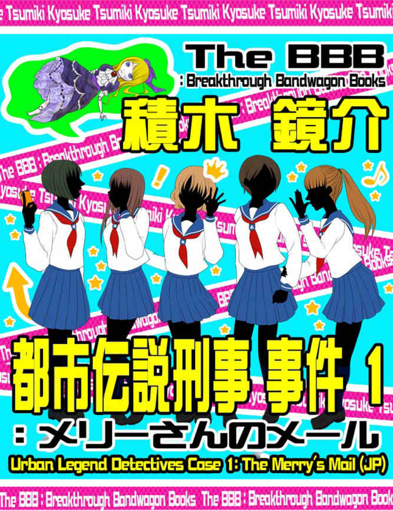

| 都市伝説刑事 事件１: メリーさんのメール (The BBB: Breakthrough Bandwagon Books) | |
| 積木鏡介 | |
| The BBB: Breakthrough Bandwagon Books (2015) | |

（邦題『都市伝説刑事 事件 1: メリーさんのメール （合本） 』）
Originally w ritten in Japanese by Kyosuke Tsumiki
Cover illustration by Maki Takeuchi
Cover design by Tanya
C opyright © 2013 Kyosuke Tsumiki / The BBB : Breakthrough Bandwagon Books
All rights reserved.
ISBN 978-1-312-14528-3
「必ず来てくれると思っていたよ」
「白い友達」は、殺風景な部屋の中心に置かれた大きな両袖机（りょうそでづくえ）の前に腰を下ろし、真向いの椅子に座るもう一人の男、「黒い友達」に声をかけた。
白い友達は、開襟（かいきん）シャツの上から、医師が羽織（はお）るような袖の長い上衣（うわぎ）をまとい、首から聴診器をぶら下げている。
だが、顔は分からない。目も鼻もない袋のような黒い布で、覆面のように顔をすっぽりと覆っていたからだ。
いや、顔を覆う布だけではない。白い友達 は黒い靴、黒いズボンを穿（は）き、黒い開襟シャツを着込み、その 上から黒い上衣を羽織っていたのである。
そう、「白い友達」は、全身黒づくめだった。
「それとも、私の方が君の前に現れた、と言い直すべきかな。君が気になるのなら、そう言い直しても構わないよ。私にとってはどちらでもいい事だからね」
「この世の中には、世界中の宝物を頂戴（ちょうだい）しても遭（あ）いたくない人がいますよね。そうは思いませんか」
「黒い友達」が掠（かす）れそうな声で言った。
黒い友達は、白いワイ・シャツに白い綿のズボン、白い靴、それに白いフード付きパーカーを着ていた。
そう、「黒い友達」は、全身白づくめだったのである。
そして、こちらも顔を見ることは出来なかった。フードを深く被（かぶ）り、隠していたからだ。
白い友達はからかうように肩を竦（すく）め、
「世界中の宝物を頂戴しても遭いたくない人？ 私の事を言っているのかい」
「あなたは本当に僕を治療なさるつもりですか」
黒い友達は質問を遮（さえぎ）るように問い返した。
「当然じゃないか。何しろ君を治療できるのは、世界中で私しかいないんだからね」
「でも本当に」
僕を治療するなんて事が可能なんでしょうか――そう問い返そうとした時、
「君は人間の原型を知ってるかい？」
白い友達は、黒い覆面に隠された口元を意味ありげに緩（ゆる）めた。
「卵子に精子が受精し、子宮の中で細胞分裂が始まって人間が発生する時、最初は薄い袋になるんだよ」
黒い友達は、黙って先を促（うなが）した。
「袋だよ。分かるかい？ そしてその袋の開口部が肛門になり、反対側にも穴が空いて口になる。腸が出来るんだ。目も鼻も、一粒の脳細胞もない、肛門と口がついただけの腸がね」
それが人間の原型？――黒い友達が頭の中で、そう呟（つぶや）いた。
「そう、そのちっぽけな管が人間の原型なんだよ」
まるで相手の心を読んだように、白い友達が言った。
「そしてそいつに心臓や肺臓、神経やら筋肉、その他様々なものが生えていくんだ。つまり人間は」白い友達は、反応を伺うように一端言葉を途切り、「つまり人間は"腸の付属品"なんだよ。人間 は腸に手足が生え、目鼻がつき、そして脳味噌を乗っけただけなんだ 」
「 僕が腸の付属品なら、内科の病院に行った方がいいかも知れませんね」
黒い友達は、白い友達がアクセサリー代わりに身に着けている聴診器を見ながら、精一杯の皮肉を込めて言い返した。
だが白い友達は意にも介さず、
「さあ、早速治療を始めようじゃないか。気分を楽にして。医師と患者なんていう、堅苦しい関係は忘れて気楽にね。私たちは今から"友達"だ。君は私、"白い友達"の"友達"、つまり"友達の友達"なんだからね」
「友達の友達？」
「そうだよ。そして私も君、"黒い友達"の"友達"だから、"友達の友達"だ」
「僕もあなたも、友達の友達......」
「その通り。だから何もかも話してくれたまえ。隠し事はいけないよ。私たちはもう"友達の友達"同士なんだからね」
奇妙な会話だ――黒い友達は思った。だが、その奇妙な会話が何故か彼の重い口を開かせた。
「実は......実は僕、自分が２人いるような気がするんです」
白い友達は、興味深げにうなずく。
「分身とか影とか、ドッペルゲンガーとか言うそうですね」
「ふむ、珍しい症例だが、前例がないわけじゃない」
「そいつはもう１人の僕なのに、僕の意志に反して勝手なことばかりするんです。今もそいつは、とんでもないことをやらかそうとしている......いや、そんな気がするんです」
黒い友達は仰々（ぎょうぎょう）しく腕を組むと、
「で、一体そいつが何を仕出（しで）かそうとしていると言うんだい」
「殺人です」
「殺人だって !? 」
会話が途絶えた。
どれだけ会話が途絶えていたのか、それは分からない。しかし、沈黙を破ったのは、白い友達の方だった。
「こんな話を知ってるかい？ ある女の子が、新しいマンションへ引っ越すために、自分の荷物を整理していたんだよ。その時......」
中学２年生の 由紀子 （ゆきこ）は、新しいマンションへお引っ越しのために、持ち物を整理していた時、押し入れの奥から古い人形を見つけた。
金色の巻き毛に緑色の瞳をした女の子――それは小さい頃、ママに買ってもらった西洋人形の「メリーさん」だった。
思い出が 蘇 （よみが え） る。
「メリーさん」は由紀子のお気に入りだった。遊ぶ時は勿論、食事の時も、寝る時も、いつも一緒。
（さすがにお風呂へも連れて行こうとした時には、ママに 叱 （しか）られちゃったけど......）
由紀子の口元が、ちょっと照れ笑いを浮かべた。
あまりいつも連れ回していたせいか、小学生になる頃には、彼女の体にも、あちこち 綻 （ほころ）びが目立つようになってきた。
それでも由紀子は「メリーさん」を大切にした。この子と私はいつまでも一緒、永遠に私のもの。そう信じて......。
「由紀子、あなたに素敵なプレゼントを持ってきたわ」ある日、外から帰ってきたママが言った。
素敵なプレゼント――それは新しい「メリーさん」だった。
古くなった「メリーさん」の代わりに、新しい「メリーさん」を買ってきてくれたんだ。由紀子は彼女を抱き上げながら、そう思った。
その新しい「メリーさん」は、今も由紀子のそばにいる。でも古い「メリーさん」も捨て切れず、ずっと押し入れの中に入れたままだったのだ。
しばらく人形を眺めていたが、結局、引っ越し先へ持っていく荷物を入れる段ボールではなく、捨てる物を入れるビニール袋の中に彼女を放り込んだ。
ちょっと後ろめたい気もしたが、（ごめんなさい。でも、もうあなたのいる場所はないの）。
***
新しいマンションへ引っ越し、荷物も 解 （ほど）き終えて落ち着き始めたある夜だった。パパとママはお出かけで、由紀子はお留守番。
リビングのソファに横たわり、少女向けの雑誌を読んでいた時、突然、携帯電話の着信音が鳴った。メールが届いたのだ。
（誰かしら？）
しかしメールには、件名も差出人の名前もない。由紀子の携帯電話には、登録されていないアドレスだった。
ちょっとの警戒心とほんのちょっとの好奇心を抱きながらメールを開いた由紀子は、 眉根 （まゆね）を 眉間 （みけん）に寄せた。
「私、メリーさん。どうして私を捨てたの？」
（何、このメール......）
考えをまとめる余裕もないまま、再び着信音が鳴った。また件名も差出人もないメールだ。引き寄せられるようにメールを開く。
「私、メリーさん。一人ぽっちで寂しいの。それにここ、とっても寒いわ」
読み終えた途端 （とたん）、今度は考える隙間さえ 遮 （さえぎ）るように、着信音が鳴った。
「私、メリーさん。今からあなたのところへ行ってもいいでしょ？」
携帯電話が指先から 絨毯 （じゅうたん）の上にこぼれ落ち、弾き飛ばされるようにソファから立ち上がった。
（何なのよ、これ！）
由紀子の頭の中に、あの日、ビニール袋へ放り込まれた「メリーさん」の姿が浮かび上がる。何だか寂しそうな憂いのある顔、そして恨めしそうな影を帯びていた緑色の瞳が......。
（イタズラだわ！）
拒絶するように、頭を左右に振った。
（私を怖がらせて、からかうつもりね。そうに決まってるわ、「メリーさんのメール」だなんて！）
今夜、パパとママがいないのを知っているのは......心当たりのある同級生の友達に電話しようと、絨毯に落ちた携帯電話に手を伸ばした――その時、また着信音が鳴った。
（何よ、ちょっとしつこ過ぎない !? ）
携帯電話を 毟 （むし）るように取り上げ、メールを開いた。
「私、メリーさん。今、駅に着いたの。もうすぐあなたのところに着くわ」
メールを閉じ、親指を素早く動かして、イタズラの犯人と目星をつけた友達の携帯電話へと繋（つな）ぐ。呼び出し音に続き、相手が電話に出たのを確認すると、
「私、由紀子よ。ねえ、あなたでしょう？ さっきから変なメールを私に......」
「私、メリーさん。今、コンビニの前にいるの。あなたの部屋の窓から見えるコンビニよ」
電話の向こうから、まだ舌足らずな幼い女の子の声――リビングに悲鳴が 轟 （とどろ）いた。再び携帯電話が指先からこぼれ落ちる。
今のは何 !? どうして小さな女の子なの !? メリーさん !? 恐怖と混乱が渦巻く中、また着信音が鳴った。
由紀子は絨毯の上に転がる携帯電話を、 怯 （おび）えた目で見つめた。もういや、出たくない。メールを見たくない。
でも、メールを"見ない恐怖"は"見る恐怖"に 勝 （まさ）っていた。再び手を伸ばすと、震える指先でメールを開く。
「私、メリーさん。今、あなたのマンションの前にいるの」
携帯電話を握り締めたまま、ベランダに飛び出し、真下にあるマンションの玄関前に目を 凝 （こ）らした。街灯 とエントランスの終夜灯の明かりが照らす夜の玄関前に......人影はない。
（バカね、私ってば。いるわけない......何もいるわけがないじゃない！）
笑みを作ろうと、無理やり唇を引きつらせながら、ベランダからリビングへ戻る。 息遣 （いきづか）いは荒くなっていた。
着信音が鳴った。
（もうやめて。もう十分、私を怖がらせたわ。だからもう、やめて）
親指が、まるで自分の意志を持っているかのようにメールを開く。
「私、メリーさん。今、あなたの部屋の前にいるの」
「いやーっ！」
携帯電話を放り投げ、リビングを飛び出し、キッチンへ飛び込んだ。そして震える手で目についた包丁を握り締め......
（落ち着くのよ、由紀子。何もいない、いる筈がないじゃない）
自分で自分を 叱 りつけながら、ゆっくり部屋の玄関へ向かう。そうだ、これはイタズラなんだ。それをこの目で確かめるんだ。
恐怖にためらう気持ちを必死でなだめ、ドアが施錠されているのを何度も確認し、ドアスコープから外を覗いた。
誰もいない。何もない。
さあ、これが最後の勇気よ。右手に固く握りしめたままの包丁に目を落としてから、そう自分に言い聞かせ、空いている左手でぎこちなく ドアの錠を外し、 ドアノブを握り締めた。
ゆっくりとドアを開け、フロアの明かりに浮かぶ、無人の廊下を見回してから、素早くドアを閉めた。
（やっぱりイタズラだったんだわ）
玄関からリビングに戻ると、全身から力が抜け落ちるように、ソファへ腰を下ろした。緊張の糸が切れ、何だか急におかしくなってきた。
（私って、本当にバカみたい。最初から分かってた筈よ、メリーさんのメールなんて......）
着信音が鳴った。
何よ、今度は？ 種明かし？ 「ごめんごめん由紀子、怖かった？」とか。
携帯電話に手を伸ばす。今夜、何回目だろう？ 絨毯 に転がってる携帯電話を拾うのは。
やっぱりあんただったのね、あのメール。怖かったかって？ ううん、全然。あんな幼稚な手で 騙 （だま）されるもんですか――頭の中に、最初に犯人と目星をつけた同級生とのメールのやりとりが浮かぶ。
メールを開いた。
「私、メリーさん。今、あなたの後ろにいるの」
***
ハンバーガーショップの店内に、甲高い悲鳴が響き渡った。
店内にいた客たちの視線が、一斉に声の方に集まる。悲鳴はセーラー服姿の女子高校生５人組のテーブルからだった。
「何々、 恵子 、その話。凄く怖いんだけど」
「『今、あなたの後ろにいるの』って最後の 台詞 （セリフ）、寒気がしちゃったわ」
だが彼女たちの表情には、恐怖の色は 欠片 （かけら）もない。
「知らないの？ これ、『メリーさんのメール』って、結構有名な話なのよ」恵子と呼ばれた少女が答えた。
「へぇ～～～」
「あっ、私、聞いたことがあるかも」
「でさあ、その女の子、その後どうなっちゃったの？」
「殺されちゃうのよ、メリーさんに」恵子はわざとらしく声を 潜 （ひそ）めた。「帰ってきたパパとママは、血まみれになった娘の死体を発見して......」
「あら、違うわ」別の少女が口を 挟 （はさ）む。「女の子は行方不明になっちゃうのよ。それでね......」
「違う違う！ 血まみれで発見されるんだってば！ それから......」
奇妙な怪談話を、まるで学校の休み時間の他愛もないおしゃべりのように大声で語り合う少女たちに、周囲は眉をひそめた。
「どうしたの？ 聡美（さとみ）。気分でも悪いの？」
少し離れたところの４人掛けテーブルにいた女の子３人組の内の１人が、隣に座っている子の顔を 覗 （のぞ）き込むように言った。肩までの髪を軽く巻いた、ちょっと太目の陽気そうな女の子だった。
怪談話に 興 （きょう）じていたグループと同い年くらいだが、制服は違う。こちらは茶色のブレザーに白いブラウス、それに胸元の赤いリボンが目立つ制服だった。
「えっ？ ううん、何でもないわ、 春奈 （はるな）」
聡美と呼ばれた少女が、曇った表情を隠すように視線を落としたまま答えた。こちらは 爽 （さわ）やかな感じのショートヘアで、もし表情が晴れていれば、ちょっと気の強そうなタイプに見えたかも知れない。
「本当？」
春菜と呼ばれた少女は、心配そうに言った。
「さあ、出来たわよ」
向かいの席に座っていた少女が、テーブルの下から手を出した。その手には、新しいストラップの付いた携帯電話を持っていた。
「ありがとう」
それを受け取った聡美に、笑顔が戻った。
「可愛いストラップだね。ねえ、 美咲 （みさき）、私のにも付けてよ」
春菜が自分の携帯電話を取り出しながら言った。
「いいわよ。ちゃんと自分の分を入れて、３人分買っておいたから」
美咲と呼ばれた少女が春菜の携帯を受け取り、今度はテーブルの上で新しいストラップを付け始めた。
ウェーブのかかった髪の毛を鮮やかな茶色に染め、化粧も濃い、 今時 （いまどき） の派手な印象の少女だった。
「はい、これで私たち３人、お揃（そろ）いのストラップだよ」美咲は携帯電話を春菜に返しながら、「だけど、何よ、あの子たち。あんな気味の悪い話を大声で」と、不愉快そうに５人組を 一瞥 （いちべつ）した。
「でも、私も聞いたことがあるわ、あの話」春菜が薄気味悪そうに言った。「最近ね、広まってるらしいのよ、メールで」
「メールで、ってどういう事？」
「チェーンメールよ」
「チェーンメール？」
美咲と春菜の会話に、聡美の表情がまた曇り始めた。
「そう、チェーンメールで。話は大体、さっき聞いたのと同じ。で、最後にお馴染みのフレーズ。このメールを読んだ人は、３時間以内に同じ内容のメールを５人に転送しなさい。さもないと......」
「さもないと？」
「今夜、あなたのところへメリーさんが現れます」
聡美が話を 遮 （さえぎ）るように立ち上がった。
「悪いけど私、もう帰る」
「えっ？」
「ごめん、聡美。もうこの話はやめるわ」
２人は 慌 （あわ）てて止めようとしたが、
「ううん、気にしないで。それに、やっぱりちょっと気分が悪いみたいだから」
「そう......それなら無理に止めないけど」
「じゃあ、また明日、学校でね」
ほら、あんたが変な話をするから。だって......。そんな２人の小声の会話を背中で聞きながら、聡美は店を出た。取り残された形になった２人の間に、気まずい沈黙が流れた。
「ちょっと化粧室に行ってくる」
気分を変えようと、美咲がポーチを持って立ち上がると、
「あら、美咲、新しいポーチね。あっ、それ最近発売されたばかりの、新作のブランド物でしょ？ 高かったんじゃない？」
春菜が 目敏 （めざと）く声をかけると、
「あっ、これ......。ほら、この間、テストがあったでしょ。あれで結構いい点とったのよ。そしたらパパが買ってくれて......」
それだけ言って、美咲は小走りに化粧室へ向かった。
店を出た聡美が、電車で自宅のある駅に着いた頃には、もう７時を回っていた。人通りの少ない線路沿いの夜道を、聡美は足早に進む。 高架下 （こうかした）の狭くて短いトンネルが見えてきた。あれを 潜 （くぐ）れば、家までもうすぐだ。
しかし、ここで何故か聡美の足が止まった。
（この辺りよね、"アレ"を見たのは......）
ここで、 道端 （みちばた）に落ちている"あれ"を見た。ショックで駆け出し、家に着いてから彩乃（あやの）に電話した。中学校の同級生で、高校に入ってからも同じクラスになったのに、もう何年も話したことのない、彩乃に......。
突然、携帯電話の着信音が鳴った。メールが届いたのだ。
（誰かしら？）
しかしメールには、件名も差出人の名前もない。それに......
（あれ？ この携帯電話）
考えるより先に、習慣で親指がメールを開く。その瞬間、全身が凍りついた。
「私、メリーさん。今からあなたのところへ行ってもいいでしょ？」
噴き上げる悲鳴を喉元で食い止めた。
（メリーさんのメール !? ）
怯 （おび）えきった目が、夜道を 忙 （せわ）しなく見回す。誰もいない。家に向かって駆けだそうとした、その時、再び着信音が鳴った。２通目のメールだ。震える指先でメールを開く。
「私、メリーさん。今、駅に着いたの。もうすぐあなたのところに着くわ」
聡美は家に向かって駆け出した。
（イタズラよ、誰かのイタズラよ）
トンネルに飛び込んだ途端、着信音が鳴った。無視して駆け抜けようとしても、心の奥の"何か"――ずっと隠し持っていた、記憶の奥の"何か"が聡美の足を引き止めた。
（ごめんなさい...メリーさん、ごめんなさい）
泣きじゃくりながら、メールを開く。
「私、メリーさん。今、あなたの後ろにいるの」
恐怖が頂点に達したと同時に、背中に鋭い痛みが走った。膝が崩れ、そのまま 腹這 （はらば）いに倒れる。
地面をかきむしるようにもがく聡美の肩を何者かが掴み、無理やり 仰向 （あおむ）けにした。その目に飛び込んできたのは、長い金髪の巻き毛、無機質なプラスチックの肌、そして感情の無い緑色の瞳だった。
（メリーさん！）
彼女が最後に見たのは、振りかざした鋭利なサバイバルナイフが、自分目がけて振り下ろされる光景だった。
警視庁捜査一課の刑事、 小林 （こばやし） 一樹 （かずき）が、所轄署の中年の刑事、 横田 （よこた）哲夫（てつお）と共に、都立 佐倉 （さくら）高校の正門の前に立ったのは、お昼を少し回った頃だった。昨夜殺された、 高田 （たかだ）聡美の通う高校だ。
耳周りをすっきりさせ、ふわりとパーマをかけた小林の髪が、風に揺れる。
刑事は大体、２人１組で行動する。２０代 半 （なか）ばのまだ若い小林は、眼鏡から 覗 （のぞ）く目の温厚なベテラン刑事の横田と組んだ。２人とも濃いグレーの地味な背広上下だが、細い 顎 （あご）に大きめな目が目立つ童顔の小林と横田が並ぶと、親子のようにも見える。
凄惨 （せいさん）な事件だった。
現場――高架下は、まさに血の海だった。１７歳になったばかりの少女の体には、鋭利な刃物による、貫くばかりの深い傷が何か所もあった。凶器は発見されていないが、刃渡り３０センチほどのサバイバルナイフと推定されている。
死亡推定時刻は、午後７時から７時３０ 分 。第一発見者は、帰宅途中の会社員だった。 怨恨 （えんこん）なのか、変質者による通り魔的な犯行か。捜査本部は、まだどちらとも決めかねていた。
２年生の女子生徒・高田聡美が昨晩殺害された事は、新聞でもテレビのニュースでも報道されている。当然、朝礼などでも事件は報告され、 既 （すで）に全校生徒が知っているだろう。
だが学校内には、意外なほど緊張感は感じられない。校庭でサッカーをする男子生徒たち、教室からは女子生徒たちの笑い声――昼休みの校舎は、何事もなかったかのように 賑 （にぎ）やかだった。少なくとも表面的には。
捜査協力をお願いするため、校長室へ向かう途中、廊下の片隅で、何やらヒソヒソ話をする生徒たちを何組も見た。
「事件の話をしているんでしょうね」
横田の言葉に、小林はうなずきながらも、頭の中で、首を 捻 （ひね）った。
何だろう？ この奇妙な雰囲気は。深刻な顔でしゃべっていたかと思うと、急にクスクスと笑い合ったり。お互いの携帯電話を見せ合いながら、１人がひどく 怯 （おび）えたような表情をしたかと思うと、別の生徒がそれをからかうような仕草をする。
一体、何なんだ、学校全体を覆うこの雰囲気は。
学校側から、生徒たちへの事情聴取をするための部屋を提供された。生徒たちを動揺させるような質問は控えるようにと、釘を刺された上で。
最初に現れたのは、殺害された高田聡美と、最後に会っていたと思われる２人の同級生、酒井（さかい） 美咲 と 渡辺 （わたなべ） 春菜 だった。
夕べは事件を知って、 碌 （ろく）に眠れなかったのだろう、２人とも、目を赤くして、今にも泣き出しそうな様子だった。
「すると聡美さんは、体調が悪いと言って、先に１人で帰ったんですね」
大体の話を聞いてから、小林が言った。
「あの時、強引にでも引き止めておけば......」
耐え切れなくなったのか、春菜がとうとう泣き出した。無理もない。数時間前まで一緒にいた友達が殺されたのだ。高校生には 受け止め辛 （づら）い事実だろう。美咲はずっと下を向いたままだ。
「これは話し 難 （にく）いかも知れないけど、正直に答えてくれるかな？ 犯人を捕まえるためにもね。聡美さんを恨んでいた人に心当たりは？」
「そんな人、いません！」春菜がきっぱりと言い切った。「確かに聡美、気の強いところもあったけど、殺したいほど憎んでた人なんていません」
「でもね、お嬢さん。人を殺す動機には、案外、つまらない理由が多いんだよ。だから......」どんな 些細 （ささい）なことでもいいから心当たりがあったら――多分、横田はそう言い足したかったのだろう。だがその時、
「メリーさんよ」
春菜が小声でそう 呟 （つぶや）いた。
「春菜！ 駄目だよ、今そんな話しちゃ」
美咲が顔を上げて、慌てたように言った。
「メリーさん？」
小林と横田が顔を見合わせた。明らかに動揺した様子の美咲の視線が、春菜と小林、横田の間を何度も往復し続ける。
「あの......言ってる意味がよく分からないんですが......」
小林が言うと、春菜は携帯電話を取り出し、素早く操作をすると、表示された画面を２人の刑事に見せた。
それは１通のメールだった。差出人は、春菜の別のクラスの友人だという。その内容は――
***
ごめん。ヤバいメールが来ちゃったんだ。怖いから回すね。後はよろしく。
ある女の子が引越しの際、古くなった外国製の人形、「メリーさん」を捨てて行きました。
引っ越してからしばらく 経 （た）ったある夜、女の子の携帯電話にメールが届きました。
「私、メリーさん。どうして私を捨てたの？」
読み終わった 途端 （とたん）、次のメールが届きました。
「私、メリーさん。今からあなたのところへ行ってもいいでしょ？」
メールは次々に届きました。
「私、メリーさん。今、駅に着いたの。もうすぐあなたのところに着くわ」
「私、メリーさん。今、あなたの家の前にいるの」
女の子は勇気を振り絞って玄関のドアを開けました。けれどそこには誰もいません。
やっぱり誰かのイタズラだったんだ。そう思った直後、またメールが届きました。
「私メリーさん。今 あなたの後ろにいるの」
このメールを受け取った方は、同じ内容のメールを、３時間以内に５人に回して下さい。
もし回さないと、今夜、あなたのところにメリーさんが現れます。
***
「何ですか？ これ。チェーンメールですよね」
小林が 怪訝 （けげん）そうに尋ねると、
「続きを読んで下さい」
春菜に 促 （うなが）されるまま、続きに目を通すと、
***
これ、本当の話です。
このメールを止めてしまった、都立Ｓ高校の女子生徒は、メリーさんに殺されてしまいました。
***
「これは！」
小林は思わず声を出し、横田も目を丸くした。都立Ｓ高校の女子生徒――イニシャルＳ、都立佐倉高校の女子生徒、つまりそれは......
「これ、聡美の事ですよね？」
春菜が問い詰めるように言った。
「昨晩、９時のニュースで聡美の死を知って、ずっと眠れませんでした。そうしたら夜中の１時頃、このメールが届いたんです」
春菜がこみ上げる気持ちを 抑 （おさ）えながら、話を続けた。
「今朝学校に来て、このメールが学校中に広がってる事を知ったわ。きっと事件を知って、怖くなって皆がメールを回し合ったのね」もしかしたら面白がってかも――悔しそうにそう言ってから「私も怖くて友達に回しちゃたけど......」最後は消えそうな声だった。
校長室へ向かう途中、漠然と感じていた学校全体を覆う奇妙な雰囲気の正体は、このチェーンメールだったのか――小林は思った。
「犯人はメリーさんよ！ だって、他に聡美を殺す人なんていないもの！ それに聡美と別れる前、ハンバーガーショップで」
「もう、その話はいいよ、春菜」
美咲が口を 挟 （はさ）むと、
「続けて下さい」小林がそれを拒んだ。「そのハンバーガーショップで何があったんですか」
春菜は小さくうなずくと、別の席の女の子たちが、「メリーさんのメール」の話をしていたこと、それから急に聡美の様子がおかしくなった事を話した。
「聡美、メリーさんに 怯 （おび）えてたんだよ、絶対に」
春奈の話が終わると、横田が目配せで、「もう、この子たちはいいでしょう」と、小林に伝えた。小林もうなずくと、
「ありがとう。もう結構です」
「他に何か思い出したことがあったら」横田が名刺を渡しながら「こちらへ電話して下さい」
春菜は美咲に支えられながら立ち上がった。そして出口のところで、こちらを振り返ると小林の目を 見据 （みす）え、
「メリーさんが聡美を殺したのよ、きっと」
「もういいよ、行こう」
美咲に引きずられるように、部屋を後にした。
「どう思います？」
小林が横田に尋ねると、
「まあ、まだ子供だし、仲の良かった友達の死が、よほどショックだったんでしょうね。妙な考えにも 取 （と）り 憑 （つ）かれますよ」
「でもメールには......」
「あの『このメールを止めてしまった、都立Ｓ高校の女子生徒は――』の部分ですか」
小林がうなずくと、
「高田聡美殺害は、テレビの９時のニュースで報じられています。被害者が女子高校生だということで、かなり刺激的にね。多分メールの発信者は、そのニュースを見て、あんな事を書き足したんでしょう。 性質 （たち）の悪いイタズラですよ。それに――」
「それに？」
「そもそも被害者は、『メリーさんのメール』なんてもらってなかったんでしょう」
そうだ、確かに高田聡美は、 そんなメールは受信 していない 。彼女の携帯電話は通信履歴を含め、徹底的に調べられている。通話にもメールにも、不審なものはなかった。
その後、クラスメイトを中心に、次々聴取が続けられた。しかし答えはいずれも「聡美を殺すほど恨んでいた人なんて心当たりはない」というものだった。
「やはり怨恨の線は薄いですね」
横田の言葉にうなずきながらも、小林には、何か割り切れない気持ちがあった。
次に部屋に現れたのは、やはり同級生の 潮崎 （しおざき） 彩乃 （あやの）。セミロングに長い 睫 （まつげ）の目立つ、 大人 （おとな）しそうな少女だった。しかし捜査本部はこの少女に、ある興味を抱いていた。
「潮崎彩乃さんですね」
彩乃は下を向いたまま、２人の刑事とは目線を合わせずにうなずいた。それから、
「あの、何故私も呼ばれたんでしょうか？ 聡美、いえ、あの高田さんとは、ほとんど話した事ないんですけど」
「いえ、聡美さんの携帯電話の履歴を調べて、ここ数日連絡を取り合った方を中心に、お話を 伺 （うかが）っているんです。あなた、 一昨日 （おととい）、つまり聡美さんが殺される前日の晩に、彼女から電話をもらいましたよね？」
小林の言葉に、彩乃はまた下を向いたままうなずいた。
「ちょっと気になったんですが、他の方、ほとんどが学校のお友達ですが、他の方は皆、携帯電話から携帯電話へかけています。でも、あなたにだけは、ご自宅の固定式の電話にかけてますよね？」
彩乃は黙って話の続きを待った。
「調べてみると、聡美さんの携帯電話には、あなたの電話番号は登録されていませんでした」
「多分、中学時代のクラス名簿か何かで私の自宅の電話番号を調べたんだと思います。あの......私と高田さん、小学校も中学校も同じ学校で、クラスも一緒でしたから」
小林と横田は、 怪訝 そうに顔を見合わせた。
「それで高校でも同じクラスに？」
彩乃はまたうなずいた。
「それなのに、ほとんど話した事がないんですか？」
今度はうなずきもせず、ただうつむいたままだった。
「それで 一昨日 の夜、聡美さんとは、どんなお話しをなさったんですか」
「あの......中学生時代のクラスメイトを集めて、同窓会でもしないかって......」
「同窓会？ 卒業してまだ２年なのに？」
「えっ......いえ、あの、小学生時代だったかも。とにかく来年は高校３年生で、進学や就職活動とかで忙しくなるだろうから、その前に集まろうって」
何ともシドロモドロな答えだ。小林はもう少し突っ込んだ質問をしたかったが、
「これは皆さんにお尋ねしている質問なんですが、聡美さんを恨んでいた人に心当たりは？」
横田の質問に、彩乃は激しく首を横に振った。
「そうですか。どうもありがとう。もし何か気がついた事や、思い出した事があったら、この名刺の電話番号に」
「あの、彩乃さん」
横田の名刺を受け取り、立ち去ろうとした彩乃に、小林が思いついたように声をかけた。
「彩乃さん、『メリーさんのメール』の話、ご存知ですか」
彩乃の表情が一変した。目は長い 睫 が弾け飛びそうなほど大きく開き、唇は小刻みに震えている。
「確かそんなチェーンメールが、学校中に広まっているそうなんですが、あなたも受け取りましたか？」
彩乃は何も答えず、ただ小林を 見詰 めるだけだった。
「あの、彩乃さん......」
「お嬢さん、ありがとう。もう、お帰りになって結構ですよ」
横田の出した助け舟に、ようやく我に返ったのか、彩乃は一礼して部屋を出た。
「 拙 （まず）いですよ、小林さん」横田は苦笑しながら、「学校側から釘を刺されたでしょう、生徒たちを動揺させるような質問は控えるようにって」
「すいません」
場数 （ばかず）を踏んだベテラン刑事の言葉に、小林は頭を下げるしかなかった。だが小林には、釈然としないものがあった。
「メリーさん」と聞いた途端、怯えるような仕草をした彩乃。そして春菜もこう言った――「聡美、メリーさんに 怯 えてたんだよ、絶対に」。彩乃と聡美は、小学校や中学校でも同級生だった。そして学校内に広まる奇妙なチェーンメール......
そんなモヤモヤしたものが重なり合い、形にならない疑惑が頭の中に浮かび上がるのだ。
***
「メリーさんのメール？」
小林の報告を聞き、捜査主任の 立花 （たちばな） 真理子 （まりこ）が、椅子に座り、長い脚を組んだまま顔も上げず、 面倒 臭そうに言った。
小林はそっと 溜息 （ためいき）を 吐 （つ）いた。
ライトグレーのスーツとスラックスの似合う、３０代後半の背の高い女性上司。ボリュームのある髪を大きくウェーブさせ、鼻筋の通った大人の美人だが、何せ態度が 大柄 （おうへい）だ。部下である小林は勿論、時には上司にも。
噂によると、若い頃はヤンキーで鳴らし、地元では「西東京のマライア」の異名で恐れられていたとか。確かにしっかりとした 顎 （あご）のラインは、いかにも気が強そうだ。
「ええ、高田聡美の通っていた学校で、そんな噂が流れていたんです、チェーンメールで。主任、ご存じでしたか？ メリーさんのメール」
「ああ、ガキの頃に聞いたな、そんな話。まあ、その頃はメールじゃなくて、電話だったけどな。メリーさんの電話。怪談話って言うか、"都市伝説"ってヤツだな」
「都市伝説？」
「ああ、噂話のちょっと高級なヤツだ。普通の怪談話、例えば......そうだなあ......お岩さんの『四谷怪談』や"一つ目小僧"だの"のっぺら坊"なら、誰だって作り話だって知ってだろ？」
「ええ」
「だがな、"都市伝説"ってのは、多くの人が本当の話って信じ込んでるのが特徴だ」
「確かに佐倉高校の生徒の一部も、本気で怖がってました」
「怪談話だけじゃない。他にもいろいろある。ガソリンスタンドで携帯電話を使うと、電磁波でガソリンに引火して大爆発を起こすとか、クーラーをつけたまま寝ると、心臓麻痺で死んでしまうとか、凍死するとか」
「えっ、どっちも大丈夫なんですか？」
「そんなもんでガソリンスタンドが爆発するか。それにクーラーだって、健康なヤツなら、凍死する前に目を覚ます」
まあ、国によって、未だにガソリンスタンドに「携帯電話使用禁止」の貼り紙が貼ってあるところもあるらしいが――そう言い足してから、
「有名なファストフード店を巡る都市伝説では、人気の鶏もも肉のフライドチキンを大量生産するために、遺伝子操作で４本足の鶏（にわとり）を造ったとか、調理を簡単にするため、羽や 鶏冠 （とさか）、それに口ばしも目もない鶏を造ったとか」
不気味だな、そんなのが本当にいたら。
「世界中に出店している有名なハンバーガーショップでは、牛じゃなくて、猫の肉を使ってるとか」
「あっ、それ聞いたことがあります」
小林は、子どもの頃に学校で聞いた噂話を思い出した。結構、あちこちで耳にした噂話だったけど、その割には誰も気にせず、平気で食べてたな。
「だから、その店が出店すると、その周辺から 野良 猫がいなくなる」
そうそう、そんな話だった。
「それから次に、野良犬がいなくなる」
えっ？ 続きがあるの？
「そして最後に、その店で働いているアルバイトの女の子がいなくなる」
そりゃ、完全に話を盛ってるだろ。
「まあ、詳しい説明は、そのうち教えてやるとして」それからいきなり小林を 睨 （にら）みつけると、「そんな事より、何か犯人に 繋 （つな）がる情報はなかったのか。高田聡美を恨んでるヤツ、 妬 （ねた）んでるヤツ、殺したいほど愛してるヤツ」
「いえ、残念ながら......」
「ちっ、無駄足か」
舌打ちしたその時、立花の携帯電話が鳴った。メールを受信したようだ。
「被害者の家族やご近所さんへの聞き込みに行ってる、 川島 （かわしま）からだ」
携帯画面を見ながら、立花が独り言のように言った。メールを読み終えると、
「あいつも無駄足だったようだな。どいつもこいつも、判で押したように同じ答え、『他人から恨みを買うような子じゃありません』だとさ」
皆に好かれる良い子はお嫌いですか？――小林が頭の中でそんな質問を考えていると、
「どうやら 怨恨 （えんこん）の線は消えたな。捜査方針は通り魔による無差別殺人に決定か。ちっ、 面倒 臭ぇなあ」
面倒臭いも何も、あんた、そこでふんぞり返ってるだけだろ？――勿論、これも小林の頭の中の 台詞 （セリフ）である。
「おい、小林。お前も 明日 （あした）からは、現場周辺の聞き込みだ。 頑張 って靴底を減らせよ。よし、もう今日は帰れ」
「はい」
返事はしたものの、その場から離れようとしない小林に、
「何だ。まだ何か用か」
「いえ......あの......」言葉を濁す小林に、 業 （ごう）を煮やした立花が一喝した。
「言いたいことがあるなら言ってみろ。どんな寝言や 世迷言 （よまよいごと）でも、話だけは聞いてやるぞ。安心しろ。怒鳴るか殴るか、蹴っ飛ばすかは、それから決める」
何を安心するんだ？
「はい、あの『メリーさんのメール』の件なんですが、もう少し調べてみては 如何 （いかが）でしょうか」
「お前、まだそんな事を気にしてるのか？」
確かに昼間横田が言った通り、 性質 （たち）の悪いイタズラと考えるのが普通だろう。だが小林 には学校での捜査以来、浮かんでくる言葉にならない疑惑を、どうして も 払拭 （ふっしょく）できなかった。
立花は眉をしかめ、ふわりとした髪を指先でしばらく 掻 （か）いていたが、
「分かった。何をどう調べるつもりかは知らんが、好きにしろ」それから、少しだけ表情を 和 （やわ）らげ、「それに、ちょっと面白そうだしな、そういう方向から捜査をするのも」
面白いって、この主任は......小林は頭の中でまた溜息を吐いた。だが立花は、すぐにまた表情を引き締め、
「 但 （ただ）し、本線の捜査に支障をきたすようなマネは、絶対にするな」
「ありがとうございます」
何はともあれ、捜査の許可はもらった。
「よし、それじゃあお前に"影の相棒"をつけてやる」
「影の相棒？」
小林が首を 傾 （かし）げると、
「サスケ！」
「ここに」
突然、背後から女性の声がした。
振り返ると、いつの間にか、黒のスーツと膝丈のタイトスカート、長い髪をポニーテール風にまとめた眼鏡の女性が立っていた。小林と同じ、立花班に所属する刑事・ 猿飛 （さるとび） 菫 （すみれ）だ。
小柄で身長は１５０センチ前後。年齢不詳。小林より年上に見える時もあれば、高校生くらいにしか見えない時もある。
元々公安部にいたそうだが、失敗でもやらかしたのか、それとも上司に嫌われたのか、こっちへ回されてきた。
色白で、仮面のように無表情。得意とするのは潜入捜査。２人１組で動くのが原則の刑事だが、彼女に限っては、ほとんど単独行動だ。捜査中も他の刑事たちと顔を合わせることは、ほとんどない。
その神出鬼没な捜査スタイルから、付いたあだ名が「サスケ」。
これは日本の伝説的な忍者、猿飛佐助に由来する名だ。彼女はその猿飛佐助が忍術を学び、忍びとして活躍した甲賀流忍者の末裔（まつえい）である......と、本人は言っている......らしい。
「話は聞いていたな」猿飛が黙ってうなずくのを確認すると、「お前は今日から小林と組んで、その『メリーさんのメール』と事件との関連を調べろ」
「ボスの 仰 （おお）せのままに」
猿飛は、小林の方を見ることもなく答えた。
「よし、今からお前たち２名を、警視庁捜査１課立花班所属、"都市伝説刑事"に任命する」
「都市伝説刑事？」
「何だ、小林。不満か」
「いえ、別に」
何だか妙な具合になってきた。まあ、それはともかく、
「主任、ちょっと気になることがあるんですが」
「何だ、小林。せっかく盛り上がってきたところなのに」
「すいません。あの『メリーさんのメール』って話、『私、メリーさん。今、あなたの後ろにいるの』で、終わっちゃいますよね」
「ああ、それがどうした？」
「その後、女の子はどうなっちゃうんでしょうねえ。人によって、女の子が殺されたり、行方不明になったりしてるみたいなんですけど」
「そんな事も知らんのか、小林は」
「申し訳ございません、勉強不足で」
仕方ないだろ！ 今日初めて聞いた話なんだから――とは、口が裂けても言えない。ぶん殴られるか蹴っ飛ばされるかされるに決まってるから。
「いいか、その最後のメールを読んで、女の子が 慌 （あわ）てて後ろを振り返ると......」
「振り返ると？」
「そこには誰もいない」
「えっ？ メリーさん、いないんですか？」
「そしてまた、着信音が鳴る」
「まだメールの続きがあるんですか？」
「メールを開くと」
「メールを開くと？」
「そこにはこう書いてある、『私、メリーさん。今、隣の部屋にいるの』」
「？」
「そしてまた着信音が鳴る」
「また鳴るんですか？」
「メールを開くと、『私、メリーさん。今、向かいのマンションにいるの』」
「通り過ぎちゃうんですか !? 」
「その後もメールは続き、数年後にこんなメールが届く。『私、メリーさん。今、ハワイにいるの。アロハ～～～♪』」
「......そろそろ帰ります」
「待て、小林。まだ話は終わってないぞ。さらに数年後、今度は『私、メリーさん。今、ニューヨークに......』」
刑事が被害者の葬儀・告別式に行くのは珍しいことではない。参列者の顔ぶれやその会話から、事件の真相に近づけることもあるからだ。
翌日、小林は現場周辺の聞き込み捜査の途中で、高田聡美の告別式に立ち寄った。横田と並んで、なるべく目立たない位置に立ち、式場の様子を 窺 （うかが）う。
やはり参列者は、高校の制服姿が多い。酒井美咲や渡辺春奈、その他、佐倉高校で目にした生徒たちも数人見かけた。
その時、式場の片隅にいた潮崎彩乃の姿に目が止まった。喪服代わりに学校の制服を着た、中学生くらいの女の子と話している。女の子はかなり興奮気味に見えた。それを彩乃が 宥 （なだ）めているようだった。
「誰でしょう？ あの女の子は」
横田に尋ねると、確認するように眼鏡の奥の目を少し細めてから、
「ああ、あの子は 梢 （こずえ）ちゃんといって、殺された高田聡美さんの妹ですよ。確か中学１年生だったと思います」
高田聡美の妹？
「すいません。ちょっと失礼します」
横田にそう言い残し、小林は２人に近づいた。
「潮崎さん、昨日はご協力ありがとうございました」
小林の声に、彩乃が振り向く。高田梢は、まだ姉を失ったショックから立ち直れないのであろう、涙が薄ら浮かぶ目で、小林を見た。
「捜査を担当している小林です。高田梢さんですよね？ 聡美さんの妹さんの」
そう言って、なるべく周囲に目立たぬよう、警察手帳を梢に見せた。すると梢は敵意の 籠 （こも）った目で、
「何か用ですか？ 必要なことは、もう全部警察の人に話しました」
「そうですか。でも私がお聞きしたいのは...」
「お姉ちゃんを恨んでる人に心当たりなんかありません。皆、お姉ちゃんの事が好きだったわ。私も大好きだった。恨んでた人なんて......」
最後は今にも消えてしまいそうな声になっていた。うつむいた瞳からは、涙があふれているようだった。
殺人事件があれば、当然まず、動機を持っていそうな人物を捜す。「誰か恨んでいた人はいませんか？」――聞きようによっては、まるで殺された側に、何か非があったかのようにも聞こえるかも知れない。
「すいません。仕事柄、どうしても被害者のご家族には嫌われるような質問もしなければならないもので」
小林は心底、申し訳なさそうな声で言った。
「でも、私がお聞きしたいのは、そういう事じゃなくて......。あの、梢さんは『メリーさんのメール』っていう話をご存じでしょうか？」
途端 （とたん）に顔を上げ、大きく見開いた目で、小林を見た。
「妙な質問かも知れませんが、ちょっと気になることがありまして」
「メリーさんの......メール」
声があからさまに震えている。明らかに 怯 えているのだ。横にいる彩乃の表情も、一気に恐怖の色に染まった。でも、何故？ そう思った時、
「梢ちゃん」
親戚だろうか、喪服を着た中年の女性が近寄り、梢の肩に、そっと手を 添 （そ）えた。
「梢ちゃん、もう、祭壇に戻りましょう。妹のあなたがいないと、亡くなったお姉さんも寂しがるわよ」
梢は、小林と女性を見比べるように交互に見つめ、それから小さくうなずいて、女性に従った。彩乃も小林に軽く 会釈 （えしゃく）をすると、逃げるようにその場から立ち去った。
（質問の仕方が悪かったかな？）
１人取り残される形になった小林は、しばらく彩乃を目で追った。しかし、事件に関係があるかどうかも分からない怪談話の事で、未成年の少女を、これ以上問い詰めるわけにはいかない。逆に「娘を怖がらせるなんて、どういうつもりだ！」と、保護者から苦情が飛んでくるのがオチだ。
仕方なくその場を離れようとすると、
「刑事さん」
背後から梢の声がした。慌てて振り向くと、少し離れたところから、
「刑事さん。『本当のメリーさんの話』、知ってる？」
「えっ !? 」
何のことだろう？
詳しい話を聞こうとしたが、梢はそのまま女性に付き添われるように、祭壇のある会場の中へ消えた。
（『本当のメリーさんの話』か......）
***
都立佐倉高校は、休み時間だった。
生徒たちが 賑 （にぎ）やかに走り回ったり、雑談に 興 （きょう）じる中、教室の前でたむろする３人組の男子生徒に、１人の女子生徒が声をかけた。
「ねえ、ちょっといい？」
３人の視線が少女に集まる。茶髪の小柄な女の子だった。濃いめのメイクと小麦色の肌から、ほんのりと香水の匂いがする。
「君、誰？」
「私？ 私は佐倉高校情報伝達心理学研究部の者よ」
「そんな部、あったっけ？」
男子生徒たちは顔を見合わせた。
「最近できたのよ。ねえ、あなた達の中に『メリーさんのメール』を受け取った人、いない？」
「メリーさんのメール？」
「ああ、 一昨日 （おととい）の夜からこの学校中の生徒に広まってるチェーンメールだろ？ 俺、もらったけど」
「俺も」
３人の内、２人が受け取っていた。
「それ、誰からもらったの？」
「ええ？ それ聞いてどうすんの？」
「何か変なことに利用するんじゃないだろうな」
男子生徒たちは、ちょっと警戒したが、
「私は情報伝達心理学研究部よ。情報の伝達経路と、それが人の心理に及ぼす影響を研究するのが部のテーマなの」
何だか分かったような分からないような説明だ。
「ねえ、お願い。絶対に迷惑かけないから」
男子生徒たちの視線は、 懇願 （こんがん）するような少女の瞳と、短すぎるスカートから伸びる足との間を、何度も上下していた。
「まあ、別に構わないけど」
「ありがとう！」
少女は聞き取った名前とクラスをメモした。再度礼を言って立ち去ろうとすると、
「ねえ、君、名前は」
「私？ サスケよ。じゃあね」
「サスケ？」語尾が上がった。「おい、ちょっと待ってよ。何年何組？ あだ名じゃなくて、ちゃんと本名を教えてよ」
男子生徒たちの声に、軽い無言の笑顔で答えると、香水の 微 （かす）かな匂いだけを残して、休み時間の雑踏の中へ消えた。
***
夜、自宅アパートに戻った小林は、着替えもそこそこにパソコンの電源をＯＮにし、インターネットに接続した。
（とにかく調べなきゃ）
検索サイ トへアクセスし、「メリーさんのメール」と入力する。たちまち数 十 万件のサイトがヒットした。主に怪談や都市伝説を扱うサイトだった。
有名な話なんだな――髪を人差し指で 掻 （か）きながら、小林は、頭の中で 呟 （つぶや）いた。
さて、どのサイトにしようか。いくつかのサイトを 巡 り、掲示板を 覗 （のぞ）く。いろいろな書き込みがあるな。成る程、これが"都市伝説"というやつか。
「キャベツを毎日２玉食べると胸が大きくなる」「２週間、毎日違う味のアメをなめると頭が良くなる」 なんていう、可愛い話もあるが、中にはかなり気味の悪い話もある。
「１８歳、高校生。耳たぶにピアスの穴をあける時は、ちゃんとした病院とかに行かなきゃダメだよ。友達の友達のクラスメイトで、自分で穴をあけた子がいた。その後、しばらくして、その穴から細い糸みたいなものが出てきて、何だろうと思って引っ張ったら、急にぷつんと何かが切れたような音がして、 途端 に目が見えなくなっちゃったんだって。その糸みたいなもの、実は視神経で、それを引っ張って切っちゃったから失明しちゃったらしい。嘘じゃないよ。その友達、嘘つくような人じゃないから」
「３２歳、主婦。海へ遊びに行って、うっかり足を滑らせて膝に怪我をした男の子がいるんです。大した事ないと思ったそうですが、数日後、足が曲がらなくなったそうです。病院で切開してもらうと、何と膝のお皿の裏に、フジツボがびっしり！ 傷口からフジツボ菌が入り込んで繁殖したそうです。嘘みたいな話ですが、友達の友達の知り合いの子どもに起きた事件だから間違いありません」
食事の後に読めば良かった――小林は顔をしかめた。
いろいろ見て回り、掲示板の書き込みが一番 賑 わっているサイトを選ぶことにした。
「負のらせん階段」――このサイトにしよう。マウスを動かし、掲示板の入力欄にカーソルを合わせる。
さて、まずは名前からだ。別に 凝 （こ）ったハンドル・ネームを付ける必要もないだろう。えーと、俺は警察官、 Policeman だから......
***
Ｐ：初めまして。会社員のＰと申します。今私の会社では、「メリーさんのメール」の話で盛り上がっています。
そんな会話の中で、同じ部署の女の子が言うには、「実は『メリーさんのメール』には、裏話がある。『本当のメリーさんの話』というのがあるらしい」というのです。
皆とても興味を持ったのですが、残念ながら、その子も詳しい事は知らないそうです。
そこでこちらの掲示板の皆様にお尋ねします。
どなたか「本当のメリーさんの話」を、ご存じの方はいらっしゃいませんでしょうか？
是非とも会社の仲間たちに聞かせてあげたいので、 何卒 （なにとぞ）、 宜 （よろ）しくお願い致します。
***
こんなもんでいいかな？――小林は一旦、パソコンから離れ、お風呂や軽い夕食で時間を 潰 （つぶ）した。そして１時間ほど 経 （た）ったところで、再びパソコンの画面を 覗 き、掲示板を更新した。早速数件の返事が入っている。
***
レイア姫：「本当のメリーさんの話」ですか？
う～～ん、もしかしたら「３本足のメリーさん人形」の事かな？
何年か前、ある工場でミスが起きて、３本足のメリーさん人形が作られ、それが市場に出回ってしまった。
ミスに気がついたメーカーが急いで回収したものの、今でも何体かは出回っているらしい。
こんな話だけど。
ジェイソン２８号：３本足のメリーさん人形？ レア物だな。ネットオークションに出品したら、高く売れそう。
名無しさん＠怖い話：男なら、誰だって３本目の足を持ってる。
勇者になれなかったロト：下ネタかよ！ そう言えば最近、ここの掲示板でメリーを見かけないな。以前はよく書き込んでたのに。
ヨナ：３本足のメリーさんについては、こんな話がある。
夜遅く、ある女性が家へ帰る途中、公園の遊歩道の 隅 （すみ）に、人形が転がっているのが目に留まった。
誰かが捨てたんだろうか？ 不審に思いながら拾い上げてよく見ると、その人形には足が３本あった。それも１本は、まるで腐りかけた肌のような 土気色 （つちけいろ）だった。
そして突然、口を開き、「私、メリーさん。私、呪われているのよ」と、何度も繰り返ししゃべり出した。
女性は恐怖のあまり人形を放り投げて、その場から逃げ去った。
でも、その後もメリーさんの声は、彼女を逃がさなかった。まるで耳元で囁（ささや）くように続いた、「私、メリーさん。私、呪われているのよ」「私、メリーさん。私、呪われているのよ」って、何度も何度も。
とうとう女性は、針で自らの鼓膜を突き破ってしまった。
ヒロ：「まるで腐りかけた肌のような土気色だった」って、それ、人間の肌で作られてるって事じゃないの？
名無しさん＠怖い話：人肉人形 !? ヤバッ！
***
（呪われた人形？）
書き込みを読みながら、小林は首を 傾 （かし）げた。それから再び、パソコンのキーボードに指を走らせ、
***
Ｐ：早々にご返事 頂 （いただ）き、ありがとうございます。つまり、その「呪われたメリーさん人形」が「メリーさんのメール」を発信している――そう解釈して 宜 しいのでしょうか？
***
書き終えると再びパソコンから離れ、今度はテレビや週刊誌を見ながら時間を潰した。画面に戻り、掲示板を更新すると、また新しい書き込みが並んでいた。
***
サザンカ：その２つの話は関係ないんじゃない？ だってメールを送ってくるメリーさんは、元々ママが娘に買ってあげたお人形でしょう。
３本足のメリーさんなんて、娘にそんな気味の悪い人形を買ってくるママ、いるかしら？
名無しさん＠怖い話：若いママに、是非とも俺の真ん中の足を／以下自主規制
北階段♀：下ネタ禁止！ でも、サザンカの言う通りだと思う。
私が聞いたのは、若い女の人が、 骨董 品店だかバザーだかで、たまたま目についた３本足のメリーさんを買う、という話だった。物珍しさに 魅 （ひ）かれてね。
その後、その女性の身に、様々な怪奇現象が起こる。詳しい筋書きはよく覚えていないけど。
ヒロ：呪われた人形を娘に買い与える親なんかいないよな。
***
（関係無いのか）
小林は拍子抜けした気分で、書き込みを読み続けた。すると、
***
ヨナ：こんな話、知ってる？ 「母のお守り」。
あるところに、父親が亡くなり、貧しいながらも互いに支え合い、仲よく暮らしていた母と娘がいたんだ......
......あるところに、父親が亡くなり、貧しいながらもお互いに支え合い、仲良く暮らしていた母と娘がいた。
娘の名前は 明子 （あきこ）。高校卒業が決まった時、明子は母にこう切り出した。「私、大学へ行きたいの」。
母親がこれまで苦労して自分を育ててくれた事は分かっている。本来なら就職して、母親を少しでも楽にしてあげたい。でも、明子にも将来の夢はあった。だから、どうしても進学したかったのだ。
「あなたの人生だもの。あなたの思い通り道を進みなさい」母親は優しい笑顔で答えた。
そして数日後、「これは母さんからのプレゼント。必ず大学に合格してね 」。 そう言って、明子にお守りを渡した。
「ありがとう、お母さん。このお守り、大切にするわ」
お守りと母親の願いが通じたのか、明子は大学に合格した。母親は明子が大学を卒業するまで働き、明子も家事を手伝いながら、一生懸命勉強した。そして無事卒業し、希望する会社への就職も決まった。
そして新しい生活が始まろうとした矢先、突然、母親が倒れた。長年の苦労が、知らず知らずのうちに、体を 蝕 （むしば）んでいたのだ。
死の 淵 （ふち）で、母親は明子にこう言った。
「私はもう長いことはないわ。ごめんね、明子。あなたを１人ぼっちにしちゃって。でも、お母さん、天国からずっと明子を見守ってるわ。あのお守りと一緒にね」
それが最期の言葉だった。明子は泣き崩れた。
それから数年後、明子は結婚し、可愛い娘にも恵まれた。ようやく訪れた幸せだった。心残りは、この幸せを、母と一緒に 享受 （きょうじゅ）出来なかったこと。
明子は肌身離さず持ち歩いていた、あのお守りを手に取った。
「ありがとう、お母さん」
時が 経 ったせいか、お守りの袋は、大分あちこちが 綻 （ほころ）んでいた。布の切れ目から、何かの切れ 端 （はし）のようなものがはみ出している。
（何だろう？）
お守りの中身は見てはいけないと言うけれど......でも、どうしても気になった明子は、思い切って中を 覗 いてみた。
中に入っていたのは写真の切れ端と、小さく折り 畳 （たた）まれた紙切れだった。
写真は......確か高校時代、母親と並んで撮ったもの――それも、明子の映っているところだけを、雑に引きちぎったものだった。
明子は 愕然 （がくぜん）とした。その写真の中の明子の顔には、何か刃物で傷つけたような、無数の 痕 （あと）があったのだ。
折り畳まれた紙切れを震える指先で広げると、そこには細かい文字で、こう書き込まれていた。
「お前さえいなければ、もっと楽な暮らしができたのに！ 大学だって！ 大学に行きたいだって！
死ね！ お前なんか死んでしまえ！ 死ね！死ね！死ね！死ね！ 死ねーーーーー！」......
ピンク色の子猫：何？ その後味の悪い話。
マッド・ガッサー：そんな母親なら、娘に呪いの人形くらい渡しかねないな。
名無しさん＠怖い話：面白れぇ～～～。俺、早速明日、この話を皆に聞かせてやろう♪
ヨナ：僕は妊婦さんを見てると、時々寒気がするんだ。だって、考えてもごらん。彼女のお腹の中にいるのは、「胎児」という名の「異物」なんだからね。
異物――つまりバイ菌と一緒だよ。
だからいつも狙われているんだ、母親の「免疫細胞」ども――食い意地の張った白血球や凶暴な殺し屋＝リンパ球やらにね。
それだけじゃない。
Ａ型血液型のお母さんのお腹の中にいる胎児が、もしＢ型だったらどうなる？ 母親の血液が入り込んだら、胎児は死んでしまうんだよ。
だから子宮と胎盤は、胎児の中に母親の血液が侵入しないよう、ブロックしてるんだ。
分かる？ 子宮は赤ちゃんを母親から守るためにあるんだよ。
よくお腹の中で、赤ちゃんが動くって言うだろ。あれはお腹の中で、はしゃいでるんじゃない。震えているんだ。母親の本性に怯えているんだよ。
そしてその恐怖が頂点に達した時、赤ちゃんは母親の胎内から逃げ出す。
これが出産だよ。
ヒロ：胎児よ 胎児よ 何故踊る 母親の心がわかって 恐ろしいのか。
死に至る病： 夢野久作 の書いた小説、「ドグラマグラ」の巻頭の一節ね。
レイア姫：私、こんな話を聞いたことがある。象の出産って、とても苦しいんだって。
そしてその難産に苦しんで苦しんで苦しんだ末、やっと子象を産み落とした途端、自分に苦痛を与えたその子を、憎悪を 剥 （む）き出しにして、踏み 潰 してしまうことがあるんだって。
***
小林は逃げるようにプラウザを閉じ、インターネットを切断した。
（こいつら皆、狂ってる！）
頭の中で、そう吐き捨てた。
翌日も小林は、捜査本部の方針に従い、横田と共に事件現場周辺の聞き込み捜査に走り回った。
夕べはあれから仲々寝付けず、ちょっと寝不足気味だが、 欠伸 （あくび）をかみ殺して靴底を減らすしかない。「メリーさん」関連の捜査を許可してくれた主任からは、「本線の捜査に支障をきたすな」と厳しく言われているのだから。
***
下校時刻の佐倉高校、１人の男子生徒が、正門を出ようとした時、
「田中君」
突然、背後から呼び止められた。振り返ると、そこにいたのは、茶色の髪と小麦色の肌で、小柄な体がやけに目立つ女子生徒だった。
「陸上部３年の田中君でしょ？」
「そうだけど、君、誰？」
「私は佐倉高校情報伝達心理学研究部の者よ。サークル活動の一環で、ちょっと聞きたいことがあるの」
「僕に？」
聞いたことのないサークルだが......田中は女子生徒の上から下までを視線でなぞりながら、
「僕に何が聞きたいの？」
「あなた、同じ陸上部の鈴木君に、『メリーさん のメール』を送ったわよね」
「えっ？ ああ、あの事ね。鈴木には悪いと思ったけど、気味が悪かったから......。でも翌朝学校へ行って、びっくりしたよ。まさか学校中に広まってるなんて、思いもしなかった」
田中はちょっと決まり悪そうに答えた。
「で、あなたは誰からメールをもらったの？」
「何だい、メールの発信源でも調べてんの？」
「まあ、そんなところね。私、情報伝達心理学研究部だから」
答えになってない答えだが、田中は妙に納得した。
「でも、それなら僕で終了だな。メールの送り主、分からないから」
「分からない？」
「ああ、件名も差出人も書いてないメールだったんだよ。ほら、読んでみる？」
田中は自分の携帯電話を見せた。
「な、書いてないだろう」
「ちょっと待って。受信時刻、事件のあった日の午後７時３０分になってるじゃない！」
「ああ、そうだよ。だから最初は無視してたんだ。だけど９時のニュースを見て、びっくりして」
「高田聡美さんの事件ね」
「メールの最後、『このメールを止めてしまった、都立Ｓ高校の女子生徒は、メリーさんに殺されてしまいました』ってところだよ。高田って子の事は知らないけど、ニュースでうちの学校の生徒だって言ってたからね。誰だって、『Ｓ高校って佐倉高校の事？ こりゃヤバい』って思うだろ？」
メールが受信されたのは午後７時３０分。死亡推定時刻、つまり犯行時刻と重なる。もし、メールが発信されたのが、高田聡美殺害直前か直後だとしたら、このメールの送り主こそ......
「同じ内容のメールを、３時間以内に５人に回さなきゃいけないって書いてあるから、 慌 （あわ）てたよ。メールもらったのが７時３０分で、 あれこれ考えながらニュース見終わったら、もう１０時近く 。残り 時間は３０分くらいだった からな。もう相手は適当に選んで回しちゃったよ。ほら、ここ」
......メリーとやら、逃がさぬぞ。
「メールのこの先頭部分に『ごめん。ヤバいメールが来ちゃったんだ。怖いから回すね。後はよろしく』って書き加えてね」
鈴木や他の４人には申し訳ないと思ってたから――そう言い足したところで、田中の肩に、女子生徒がそっと手を添えた。
「ねえ田中君、お願いがあるんだけど」
***
夕方、学校帰りの彩乃は、帰宅途中にある公園の前で立ち止まった。
暗くなると、人通りも少なくなる公園だ。今くらいの時間ならまだいいけど、部活とかで夜遅く帰る事になった時は、遠回りしてでも別の道を選んだ方がいかも知れない。
そんな事を考えていた時、
「潮崎さん」
突然、後ろから声をかけられた。
「刑事さん」
小林の顔を見て、彩乃は眉をひそめた。
「すいません。仕事を終えてから学校へ行ったら、もう下校した後だったもので」
走って来たのか、小林は息を切らせながら答えた。
「それで追いかけて来たんですか」
彩乃が視線を外し、まるで無視するかのように、公園の遊歩道を歩き始めた。
「担任の先生がまだいらっしゃいましたので、自宅近くの駅を 伺 （うかが）って......まあ、大体この辺りにいらっしゃるかと」
小林も、彩乃の後を追うように歩き始めた。
「私に何を聞きたいんですか？ またメリーさんの話？」
静かだが、露骨な警戒感と微妙な敵意の 籠 （こも）った声を突きつけられ、小林は返答に 窮 （きゅう）してしまった。
ネットで調べても十分な情報は集まらない。 切羽詰 （せっぱつま）ってもう一度、彩乃から話を聞こうと思ったのだが......よくよく考えれば、何をどう質問したものやら、分からなかった。
「刑事さんは、どうしてメリーさんにこだわるんですか」
言葉を詰まらせしまった小林に、彩乃の方から問いかけてきた。
「えっ？ どうしてって、いや、何となく......」
「何となく？」
彩乃がやっと小林の顔を見た。
「朝礼で教頭先生が言ってたけど、犯人は通り魔なんでしょう？ 他の先生も言ってたわ。別に聡美を狙ったわけじゃない、相手は誰でもよかったんだろうって」
「でも生徒たちは、それを信じてるわけじゃないんでしょう？ 例えば渡辺さんは......」
「渡辺って......春菜が？」
しまった。口が滑って、余計な事まで言ってしまった。小林は頭の中で舌打ちしたが、今更 誤魔化 （ごまか）しようもあるまい。
「ええ、春菜さんは言ってました。メリーさんが犯人だって」
「それを信じたんですか？」
彩乃が立ち止まり、 半 （なか）ば呆（あき）れたように語尾を上げた。
「別に疑う理由もないし......」
増々言葉に詰まる小林を見て、彩乃が小さく吹き出した。
「私、刑事さんって、人を疑うのが仕事かと思ってた」
小林は、初めて彩乃の笑顔を見た。
「人を疑うのが苦手な 性分 （しょうぶん）なんです。刑事失格ですね、僕は」
「それで、メリーさんの話も信じちゃったんですか？」
「別に信じてるわけじゃありませんけど...」どう説明すればいいのだろう。「上司から"都市伝説刑事"に任命されたもので」とでも言おうか。いや、増々呆れられるのがオチだ。
「私のおばあちゃんは田舎に住んでるの、携帯電話がやっと通じるくらいの、山の奥の静かな村にね」
小林が説明に困っていると、彩乃の方から語り始めた。
「小学生の頃は、夏休みによく遊びに行ったわ。おばあちゃんに会うが楽しみだった。でもそれ以上に楽しみにしていたのは、夜、おばあちゃんが話してくれた、田舎の不思議な話や怖い話。大体は、狐や狸に人が化かされる話だけど、こんなのもあったわ」
彩乃は、再び遊歩道をゆっくりと歩きながら、話し始めた。
「ある村人が 薪 （たきぎ）を担いで山道を歩いていると、反対側からお坊さんが来たの。見たこともないお坊さんだったけど、田舎の気安さから、村人は『お坊様、こんにちは』って頭を下げたそうよ。そうしたらそのお坊様、無言でニヤリと笑ったの。そして突然、背がぐんぐん伸び始め、見上げるような高さから、 瞬 （またた）く間に雲を突くような大男になって、ヘラヘラと笑い出したんだって」
「それで、村人は？」
「命 辛々 （からがら）、村へ逃げ帰ったそうよ。でも......」ちょっと言葉を切ってから「きっと迷信よね、こんな話」
しばらく沈黙が続いた。だが、決して重苦しいものではない。お互いに次の言葉を探り合い、会話の駆け引きを楽しむような、そんな心地良ささえあった。
「迷信とか噂とか都市伝説とかの発信源というか、それを最初に言い出した人って、どんな人なんでしょうね」
小林が話を切り出した。そう、ファストフード店が開発した奇妙な 鶏 （にわとり）やら、ピアスの穴の話とか......あんな話を最初に語り始めたのは、一体誰なんだろう。彩乃がゆっくりと首を横に振り、
「それは誰にも分からない。いくら探しても、最初に言い出した人には 辿 （たど）り 着 （つ）けないのよ、絶対にね。雲を突くような大きなお坊さんを見た村人だって、きっと見つからないわ。不思議ですよね」
それから気分を変えるように、
「私ね、何でもかんでも"迷信"や"都市伝説"にしちゃうのって、好きじゃないの。だからこう思ってるの。皆が"迷信"や"都市伝説"だと思ってる出来事は、きっと別の世界の住民たちの話なんだって」
「別の世界？」
「そう、私たちの世界と一見、そっくりなんだけど、どこか違う世界。そこにいる住人にとっては、雲を突くようなお坊様も、それにネス湖のネッシーや雪男なんかも、普通にいるの。幽霊や妖怪や妖精の話も、その人たちにとっては、お天気の話や好きな芸能人の話と一緒。だっていつも 傍 （そば）にいるんだもん」
「 随分 （ずいぶん）、 賑 （にぎ）やかな世界だね」
小林がおかしそうに言うと、彩乃はうなずいた。
「でも、それが彼らにとって、当たり前の日常なのよ。そんな世界の住人が、もし何かのきっかけでこちらの世界へ 紛 （まぎ）れ 込 （こ）んで来ちゃったらどうなると思う？」
小林が首を 捻 （ひね）ると、
「見た目は一緒なんだから、向こうの住人も、自分が別の世界へ紛れ込んじゃったって事には気がつかない。だから出会う人出会う人、かたっぱしから自分の世界の世間話をしちゃうのよ。『いや～、さっきは危うく 河童 （かっぱ）に川へ引きずり込まれそうになりましたよ』とかね。そしてしばらくすると、また元の世界へ帰っちゃう」
「そうして河童の迷信が生まれる？」
「うん。だってこっちの世界に、河童なんかいないもの」
「４本足の鶏や、羽や 鶏冠 （とさか）、口ばしも目もない鶏は？」
小林は、立花主任から聞いた都市伝説の話をした。
「当然、あっちの世界では常識。皆、当たり前だと思ってるわ」
「猫のお肉で作ったハンバーガーも？」
「あら、刑事さん、ハンバーガーに猫のお肉じゃなかったら、何の肉を使うの？ まさか牛じゃないわよね？」
彩乃は楽しそうに笑った。小林も釣られて笑う。そうか、迷信や噂、都市伝説の発信者は、別世界の住人か。それならいくら探しても、絶対に見つからないわけだ。
「逆だってあるわよ。例えば犬の散歩中の人が、あっちの世界へ紛れ込んでしまったらどうなると思う？ そして、あっちの世界には犬なんて存在しなかったら」
「う～～ん、大騒ぎになるのかな？ やっぱり」
「だって、お上品な奥様が、小さなトイプートルに 引き紐 （リード）で引っ張られながら、突然現れるのよ。『ちょっと待ってよ、ショコラちゃん』とか言いながら。あっちの住人は驚いて聞くわ、『奥さん、それは何ですか？』。すると奥様はこう答えるの、『この子、ショコラちゃんっていうのよ』って」
新種のペット？ いや違う。だって首輪につないだ 引き紐 （リード）に引っ張られながら、犬の後をついて行く奥様の姿は、どう見ても主人に従っている家来か召使い。しかもその奥様は、ショコラが吠えるたび、「どうしたの？ 疲れたの？ 喉が渇いたの？」と 甲斐甲斐 （かいがい）しく世話をする――揚げ句の果てに、 粗相 （そそう）をしたら、その面倒まで。
「そしてまた犬がワンと鳴くと、『あらあらショコラちゃん、お腹が空いたの？ じゃあ家に帰りましょう。 美味 （おい）しいご飯を用意してあげる』、そう言ってまた元の世界、私たちの世界へ戻って来るの」
「するとあっちの世界では？」
「勿論、それを見た人は大騒ぎ、ショコラなる謎の生物を見た、って。そして噂は広がって、こうなるのよ。そいつは小さいけど、人間を自由に 操 （あやつ）り、自分の食事や 粗相 の面倒まで見させる妖怪だ。鳴き声だけで人間を従わせ、意のままに動かす、恐ろしい化け物だ、ってね」
「その正体は宇宙人か？ なんて言う人も出てきそうだね」
「でも、それを聞いたある人は、きっとこう言うわ、『そんなのは迷信、都市伝説だよ』ってね」
「つまりあっちの世界に、新しい都市伝説が生まれるわけか」
彩乃が嬉しそうにうなずいた。
が、次の瞬間、彩乃の足が止まった。それだけではない、遊歩道の一点を見詰めたまま、表情が一変し、恐怖で凍りついてしまったのだ。
何が起こった !? 小林は彩乃の視線の先を目で追った。そこには一体の汚れた西洋人形が転がっていた。金髪に緑色の目をした、女の子の西洋人形が。
しかもよく見ると、その人形には、足が３本あった。
（３本足のメリーさん !? ）
小林がそう思った瞬間、携帯電話の着信音が鳴った。彩乃の携帯電話だった。メールを受信したのだ。震える指先でメールを開く。
「私、メリーさん。私、呪われているのよ」
静かな公園の遊歩道に、彩乃の悲鳴が 轟 （とどろ）いた。
小林は、ショックと恐怖で崩れ落ちそうな彩乃の体を支え、何とか近くのベンチまで運んだ。
「やっぱり私だ。次は、私だったんだ」
意味不明な言葉を、呪文のように繰り返す彩乃が落ち着くのを待って、
「何故なんです？」小林は、彼女に会ってから、ずっと 拭 （ぬぐ）い切れなかった疑問をぶつけてみた。「何故、あなたはそんなに『メリーさんのメール』を怖がるんですか？」
そして自分の頭の中で、どうしても高田聡美殺害事件と「メリーさんのメール」とを切り離せなかったのか、その理由も打ち明けた。
「聡美さんも 怯 （おび）えていました、『メリーさんのメール』を。春奈さんがそう言ってました。そしてその聡美さんと、小学校も中学校も同級生だったあなたも怯えている。妹の梢さんも。どうしてですか。何故あなた達は、そんなにもメリーさんを恐れる必要があるんですか」
「私が......私と聡美がメリーさんを殺したからよ！」
一瞬、沈黙の時間が流れた。
「殺した？」
「私たちが、メリーさんを殺したの」
彩乃が涙をすすりながら言った。
「どういう事なんです？」
「３年前、中学２年の時......」
***
......私と聡美、そしてもう１人、 吉田 （よしだ） 由紀子 （ゆきこ）はとても仲良しだった。小学校に入った頃からね。登下校も休み時間も、学校の中でも外でも、いつも一緒だった。私たち３人、気が合ったのね。
でも一つだけ、由紀子と私たちには、合わない事があった。由紀子はちょっと理屈っぽいところがあったのよ。
女の子なら、誰だって占いは好きでしょう、普通は。でも由紀子はちょっと違ってた。私と聡美が雑誌の星占いの話で盛り上がってると、決まって、
「ねえ知ってる？ 星占いって、今から２０００年以上も前の星の見え方を基準にしているのよ。その間に星座もズレちゃって、昔のしし座は、今はかに座なんだって」
"おうし座"だから、思いやりがあって 辛抱 （しんぼう）強い星座のもとに生まれたつもりだった人は、実は自己中心的で短気な"おひつじ座"で......
そんな話を、得意顔でするのよ。私も聡美も、一応調子を合わせてうなずいてたけど、内心、 白 （しら）けちゃってたわ。
怪談話なんかもそうだった。どんな話も「どうせ作り話でしょう」「私、本物を見るまで幽霊なんか信じないわ」でお終い。
それで......
***
「それで......」
「それからどうしたんですか？」
うつむいたまま、急に話をためらい始めた彩乃を、小林がそっと後押しするように話の続きを 促 （うなが）す。
彩乃は少しだけ顔を上げ、小林の顔を 一瞥 （いちべつ）してから、また顔を落とした。
***
事件は、私と聡美が学校からの帰り道、「メリーさんのメール」の話で盛り上がっていたのがきっかけだった。
「好きね、聡美も彩乃もそういう話」少し遅れて、後から話に加わった由紀子が、 呆 れながらこう言ったの。「私この前、引っ越ししたでしょう。その時に古いメリーさんの人形、捨ててきたわ」
「えっ、それって由紀子のお気に入りの人形だったじゃない。小さい頃、私たちと一緒に遊ぶ時も、いつも抱いていたでしょ。私、覚えてるわ」
聡美が言うと、
「ええ、でも新しいメリーさんがいるし」
「そうね」私は笑いながら、「由紀子には、新しいメリーさんがいるもんね」
「でもさあ」聡美が言った。「いいのかなあ。古いメリーさん、捨てられて泣いてるかもよ」
「人形が泣くわけないでしょ。聡美ったら、『メリーさんのメール』の話、本気にしているの？」
「別にそういうわけじゃなけど......」
口 籠 （くちごも）った聡美に、私は軽い助け舟を出そうと、わざとらしく低い声で、
「大丈夫？ 由紀子。今夜あたり、メリーさんからメールが来るかもよ。『どうして私を捨てたの？』って」
「やめてよ、彩乃」
由紀子が笑いながら言った時、ちょうど私たちと由紀子の帰宅路の分岐点に来た。
「由紀子、うちへ寄ってく？」聡美が声をかけると、「ごめん、今日はママがお出かけだから、早く帰らないと」
「お留守番？」
「うん、夜まで帰れないんだって。パパも帰りが遅くなるって言うし」
由紀子とはそこで別れ、私たちは聡美の家に行った。
「ごめんなさい、聡美。ママ、今から急用で出かけなきゃいけないの」
聡美の家に着くなり、聡美のママが言った。
「悪いけど、お夕飯はファミレスで済ませてくれる？ 梢も一緒に。あっ、勿論、彩乃ちゃんにもご 馳走 （ちそう）してあげて」
聡美のママは、お 小遣 （こづか） い と当時１０歳だった妹の梢ちゃんを聡美に預け、家を出て行った。
「お留守番か。これじゃ、由紀子と同じね」
聡美は笑った。
しばらく家の中で時間を 潰 し、夕方を少し過ぎた頃、３人でファミレスに向かった。
途中の公園の池の前に差し掛かった時、梢ちゃんが突然、ベンチに走り寄った。そしてベンチの裏に回るとそこに 屈 （かが）み込み、地面から何かを 拾 （ひろ）い上げた。
「お姉ちゃん、これ」
公園内の街灯の薄明かり浮かび上がったのは、携帯電話だった。
「誰かが落としたのね」
梢ちゃんから受け取った携帯電話を 眺 （なが）めながら、聡美が言った。
「ファミレスへ行く途中に、交番へ寄らなくちゃならなくなったみたいね」
私がそう言うと、聡美は口元に意味ありげな笑みを作り、
「ファミレスの帰りでいいんじゃない。ちょっと面白いことを思いついたの」
「えっ？ 駄目だよ。他人の携帯電話で遊んじゃ」後で持ち主に分かったら、怒られるよ――そう言ったが、
「大丈夫よ、長距離電話なんかしないわ。それに通信履歴を消しちゃえば、何も分かりゃしないわよ」
そう言うと梢ちゃんの手を取り、さっさと歩き始めてしまった。
「ねえねえ、これ使って、由紀子を驚かせてやろうよ」
食事もひと段落した頃、拾った携帯電話を見せながら、聡美が言った。
「驚かすって......何をする気？」
「まあ、見てて」
聡美は、その携帯電話に由紀子のアドレスを入力すると、件名も名前も入れず、本文を打ち始めた。
「それじゃ、誰からのメールか分からないじゃない」
「だからいいのよ。さあ、出来た」
携帯電話の画面をこちらへ向ける。こんな文章だったと思う。
「私、メリーさん。どうして私を捨てたの？」
「これって」
怪訝 （けげん）そうな私を無視して、聡美はメールを送信した。
「これで第１弾はＯＫ。お次は......」
再びメールを打ち始めた。今度はこんな文章だった。
「私、メリーさん。一人ぽっちで寂しいの。それにここ、とっても寒いわ」
私は軽く吹き出した。
「何よ、これ。『メリーさんのメール』のつもり？」
どうやら聡美は、さっきこの怪談話をバカにした由紀子を、このメールでちょっと驚かそうとしているらしい。
「無駄無駄。由紀子はこんなのじゃ驚かないわよ。あの子の性格、よく知ってるでしょ？ 今ごろ『聡美の仕業ね』って、笑ってるわ」
「そうかしら？」
聡美は不服そうに言いながら、尚もメールを打ち続けた。
「私、メリーさん。今からあなたのところへ行ってもいいでしょ？」
「私、メリーさん。今、駅に着いたの。もうすぐあなたのところに着くわ」
そして次に送信するメールを書き上げた時、突然、聡美本人の携帯電話が鳴った。
「ほら、とうとう由紀子が怒って電話してきたじゃない。早く謝っちゃいなさいよ」ちょっとしつこ過ぎるわよ――そう言い足そうとすると、
「まだまだ、これからよ」
そう言うと自分の携帯電話を梢ちゃんに持たせ、拾った方の携帯電話に、たった今打ち終わったばかりのメールを見せながら、
「いい？ もし電話の相手が由紀子だったら、このメールの通りにしゃべるのよ」
できれば人形っぽく、可愛い声でね――そう言うと梢ちゃんは小さくうなずいた。そして電話を小さな耳に当て、相手を確認すると、私たちに向かって軽く笑みを見せ、
「私、メリーさん。今、コンビニの前にいるの。あなたの部屋の窓から見えるコンビニよ」
普段でも少し甲高い声のオクターブをさらに上げ、わざとらしく舌足らずに、子どもっぽさを増した声で言う。それが可愛らしくも面白く、私も聡美もクスクスと笑ってしまった。
「どうだった？ 由紀子の反応」
「うん、最初は怒ってたけど、私の声を聞いて、大声出してた」
梢ちゃんがちょっと不安そうに言ったので、私も、
「ねえ聡美。そろそろ種明かししてあげたら？」
でも聡美はもう止まらないみたいだった。 再びメールを打ち始め、
「私、メリーさん。今、あなたのマンションの前にいるの」
「私、メリーさん。今、あなたの部屋の前にいるの」
夢中になっている聡美を見ているうちに、私もこのイタズラにどんどんと引き込まれていった。
いつも、「怪談なんてみんな作り話」と笑っていた由紀子の顔。そして今日も「人形が泣くわけないじゃない」「『メリーさんのメール』の話、本気にしているの？」とバカにしたような、あの顔が頭に浮かんだ。
その由紀子が今、どんな 怯 えた顔をしているんだろう。そんな、ちょっと残酷な想像にかき立てられていた。
「さあ、これが最後」
聡美が最後のメールを完成させた。
「えーと、『私、メリーさん。今、あなたの後ろにいるの』。これで完了、はい送信」
拾った携帯電話の電源を切り、私たちは由紀子の反応を想像して、しばらく笑ってた。その時、何が起きているのかも知らずに......。
「さあ、そろそろカンカンに怒った由紀子から電話が来るわよ」
聡美がおかしそうに言った。
しかし、いくら待っても電話はなかった。３０分ほどして、今度は私の携帯電話から由紀子に電話した。
「ごめんごめん、今のイタズラ、怖かった？」
「やっぱり、あなたたちの仕業だったのね！ 本当にガキなんだから！」
そんな 他愛 （たあい）もない会話を予想していた。しかし何故か電話には誰も出ない。そのまま留守番伝言サービスへ転送されてしまった。
「出ないわ」
私たちの表情から笑顔が消えた。
「出ないって、どういう事？」
聡美が 怪訝 そうに言った。
「自宅に直接電話してみるわ。もしかしたら、パパかママが戻ってるかも知れないし」
「そこまでする必要ある？ 大丈夫だよ。きっとシャワーでも浴びてるんだよ」
聡美が無理に引きつった笑いを作る。私は無視して固定電話の方へかけた。呼び出し音が数回響いた後、
「もしもし」
聞いたことのない男性の声だった。
「もしもし、吉田さんのお宅ですか」
「あなたは？」
落ち着いてはいるが、何故かこちらに有無を言わさず返答を迫る迫力があった。誰だろう？ だけど、それ以上に私を不安に 陥 （おとしい）れたのは、電話の向こうから 微 （かす）かに聞こえてくる、興奮した女性の悲鳴のような声だった。明らかに何か"異変"が起きている。
「私、由紀子の同級生の彩乃といいます。あの......由紀子、いますか？」
「少々お待ち下さい」
電話の向こうは、何人かが何か相談をしているような雰囲気だった。
「落ち着いて聞いて下さい。私は警察の者です」
「警察 !? 」
私の声に、聡美と梢ちゃんが顔を見合わせた。
「先ほど、こちらの家の方から通報を受けて参りました」
「何かあったんですか !? 由紀子は !? 由紀子はそこにいるんですよね !? 」
数秒ほど沈黙が 挟 （はさ）まった後、警察が一語一語、 噛 （か）んで言い含めるように言った。
「由紀子さんは現在、行方不明です。我々も彼女の行方を追っています」
「行方不明......」
「彩乃さんとおっしゃいましたね。捜査上、詳しい事情はご説明できませんが、由紀子さんは今、大変危険な状態にあると思われます。彼女の立ち寄りそうな場所に、心当たりはありませんか？」
「あの......あの......私......」
気が動転していた。一体、何が起こったのだろう。
「落ち着いて下さい。急な話で驚かれたでしょう。では、何か思い出したら、必ず警察へご連絡下さい」
そう言って警察の人は、連絡先を教えてくれた。私は震える指先でファミレスの紙ナプキンを取り、カバンからボールペンを引っ張り出して、それをメモした。
「どうしたの？」
電話が切れたのを確認するなり、不安と動揺の混じった声で、聡美が言った。
「分からない。警察の人が電話に出て、電話の向こうで女の人の悲鳴みたいな声がして......」
「悲鳴って......由紀子の？」
私は首を振りながら、
「違うと思う。もっと大人の女の人の声だったわ」
不安と 焦燥 （しょうそう）が重くのしかかる。その重みに耐え切れなくなったのか、聡美はファミレスのレシートを、むしり取るようにテーブルから取り上げると、
「ここを出よう」
私たちはファミレスを飛び出した。
無言のまま公園に差し掛かると、聡美は拾った携帯電話を、いきなり池の中へ投げ込んだ。
「何をするの！」
私は問い詰めた。しかし聡美は、
「私たち、携帯電話なんか拾わなかった。由紀子にもメールなんか送ってない。いいわね」それから梢ちゃんに向かって、「分かったわね、梢。ママにも、勿論パパにも、今日のことは 内緒 （ないしょ）よ」。
後で知ったことだけど、電話の向こうから聞こえた悲鳴のような声は、由紀子のママのものだった。
由紀子のパパとママは偶然、駅で会い、２人揃って帰宅した。そしてリビングの光景を見るなり、ママは半狂乱になり、パパは慌てて警察へ緊急通報したのだ。
全て翌日、学校で先生方や取り調べに来た警察の人などから聞いた話だった。
***
「由紀子は私たちのイタズラに、私たちが思ってた以上に怯えてたんだと思う。これも後で知ったことなんだけど、キッチンから包丁を持ち出すほどだったそうよ。自分の身を守ろうとしたのね、きっと」
ここから先は、私の想像も入るんだけど――そう前置きしてから、
「聡美が最後のメール、『私、メリーさん。今、あなたの後ろにいるの』ってやつね、これで由紀子の恐怖感は極限にまでに達したんだと思う。そしてその時、背後に気配を感じた......いえ、もしかしたら、何かが背中に触れたのかも知れない」
何かが背中に触れた？ 小林は息を飲んだ。
「恐怖に我を失った由紀子は、振り向きざまに握り締めていた包丁を、思いっきり振り回したの。恐らく目を閉じて、力の限り、何度も何度も......」
彩乃は一旦、言葉を切った。小林は黙って続きを待った。
「でも、そこにいたのはメリーさんじゃなかった。メリーさんなんかじゃなかったの。由紀子の後ろにいたのは、妹の 良子 （りょうこ）ちゃんだったのよ」
「妹？」
「そう、妹の良子ちゃん。まだ６歳だったわ。きっと、１人で自分の部屋にでもいたのね。そしてリビングにいる由紀子の様子がおかしいことに気がついて、 傍 （そば）に寄ってきたんだと思う」
心配して背後から近寄った――いや、それだけはなく、姉を振り向かせようと、背中に触れるか、洋服を軽く引っ張ったのかも知れない。姉を心配した妹の行動が、逆に姉の恐怖を 頂点 （ピーク）にまで上り詰めらせてしまったのだ。
「それで、妹の良子ちゃんは？」
「死んじゃったの！ 由紀子が振り回した包丁に、何度も何度も切られて！」
彩乃は耐え切れずに泣き崩れた。
「私たちのイタズラのせいで死んだのよ。私たちが良子ちゃんを殺したんだわ」
「つまり、君の言うメリーさんって......」
小林は、彩乃の震える肩に、そっと手を添えた。
「良子ちゃんはね、由紀子が小学校２年生の時に生まれたの。病院から良子ちゃんを連れてきた日、ママはこう言ったそうよ、『由紀子、あなたに素敵なプレゼントを持ってきたわ』って」
彩乃が軽く鼻をすすった。
「由紀子はその言葉をそのまま受け取ったわ。私たちにこう言ってたもの、この子はママが私にくれたプレゼント、新しいメリーさんだって」
その頃はもう、私たち３人は大の仲良しだったから――そう言い添えてから、
「由紀子、妹と２人きりや私たちと一緒の時には、いつも良子ちゃんを『メリーさん』って呼んで可愛がってたわ。良子ちゃんも『メリーさん』と呼ばれると、その意味もよく分からないはずなのに、喜んでた」
仲の良い姉妹だったわ――最後は消えそうな声になっていた。
由紀子が行方不明になったのは、妹の死のショックによる恐怖とパニックで、マンションから逃げ出してしまったためだろう。
「分かったでしょ？ 私と聡美が由紀子の大切なメリーさんを殺したのよ」ほんのイタズラのつもりだったのに――そう言って彩乃は、再び泣き出した。
彩乃が聞いた話では、マンションを飛び出した由紀子は、血まみれの包丁を握り締めたまま、近所を 徘徊 （はいかい）しているところを保護されたそうだ。目撃者の話によると、彼女はゴミ収集場所を見つけるたびに近寄っては包丁でゴミ袋を切り裂き、中の物を周囲にまき散らかしていたという。
「きっと、自分が捨てたメリーさんの人形を、探し回ってたんだと思う」
彩乃が言った。
「保護された由紀子は、警察の質問にもまともに答えられず、ただ『メリーさんが......メリーさんが』と、繰り返すだけだったそうよ」
しかし警察にはそれが何の事か分からず、両親も、昔娘が大事にしていていた人形としか答えようがなかった。
「でも、由紀子ちゃんの携帯電話を調べれば、君たちが送ったメールが残っている筈だろう？」
彩乃が静かに首を横に振った。
「由紀子の携帯電話は、 徘徊 していた道の真ん中で見つかったわ。完全に壊れていたって」
彼女が自ら地面に叩きつけて壊したのか、それとも知らずに落とした後で、車か何かに 轢 （ひ）かれたのか――それは知らないという。結果的に、彼女たちのイタズラ・メールが表沙汰になることはなかった。
（これが高田梢の言っていた「本当のメリーさんの話」だったのか）
「それで、由紀子ちゃんはどうなったの？」
「詳しいことは知らない。どこかの施設に預けられたって聞いたけど、詳しいことは......。それからすぐに両親も引っ越しちゃったし」
由紀子とその両親か。調べてみる必要がありそうだな。小林は思った。
「その事件以来、私も聡美も、お互いを避けるようになったわ。同じ高校に入学してからも、同じクラスになってからもね」
その時小林は、ある事を思い出した。
「もしかしたら、殺害前に聡美さんからあった電話って......」
「聡美も見たのよ、あの３本足のメリーさんを。殺された 高架下 （こうかした）の 傍 で。それで私に電話をかけてきたの、メリーさんを見たって」
やっぱり、そうだったのか。
「いきなり電話が来たときには驚いたわ。ううん、取り乱している様子はなかった。でも、 怯 えていたのは分かったわ、今日、メリーさんを見たって。それも３本足のメリーさんを」
だが、お互いにそれ以上踏み込んだ話はしなかったそうだ。今度、久しぶりに２人で遊びに行こうか――そんな月並みな会話で、電話を切ったらしい。
「メールは？ さっきの『私、呪われているのよ』とかいうメールを、彼女も受け取ったのかな？」
彩乃は首を振った。
「分からない」
聡美の携帯電話の着信履歴を調べた限り、それらしいメールは確認されていない。証拠が残るのを恐れたのか、彼女には送らなかったのだろう。
よし、それなら。
「彩乃さん、さっき届いたメールのアドレスを教えてくれないか」
***
「吉田由紀子か」署に戻った小林の報告を聞いた立花が言った。「分かった。そっちの方は、川島に調べさせよう」
立花は、スーツの内ポケットから携帯電話を取り出すと、慣れた手つきでメールを打ち、送信した。
「主任、お願いがあるんですが」
「何だ、小林」
小林はポケットからメモを取り出し、
「このメールアドレスが誰のものか、調べて下さい。配信したやつを特定したいんです」
「これが３本足の呪われたメリーさんのメールの送り主か」
メモを受け取りながら、立花が言った。
「ええ、まあ、３本足といっても、適当な人形の足を切り取って、接着剤でくっつけただけのものでしたが......とにかく、このアドレスの持ち主を」
「バカか、小林」
立花が一喝した。
「個人情報に神経質なこのご時世に、通信会社が『はい、承知致しました』ってアドレスの主を、バカ正直に教えてくれるとでも思ってるのか」
「ですから、裁判所の捜査令状を取って、それを通信会社へ見せれば彼らだって」素直に応じるはず――そう言おうとしたが、
「こんなイタズラ・メールの１本で、令状が取れるとでも思ってるのか？ 大体、頭の固い上司の 爺 （じじい）どもに何て説明する？ 『犯人は呪われたメリーさん人形でございます』とでも言うつもりか」
小林は言葉に詰まった。
「いいか、捜査本部のクソバカ上層部の捜査方針は、通り魔による無差別殺人だ。捜してるのは誰彼見境なく殺す、頭のイカレた変質者で、人形じゃないんだぞ。それを忘れるな」
「ですが......」
「それとも今のお前に、爺どもが決めた捜査方針を、ひっくり返せるだけの証拠が揃えられるのか？」
ついでにこう言ったらどうだ。警察は基本的に"事件"にならなければ動けない。つまり、潮崎彩乃が高田聡美のように殺されなければ、メールも何も調べられないって！――小林は頭の中で怒鳴り返した。
その時、立花の机の上の電話が鳴った。
「はい、立花班。おお、サスケか。首尾はどうだ？」
「ボス、例のチェーンメールの発信源を突き止めました。アドレスは......」
立花は、サスケの調べたアドレスを聞きながら、小林がメモしたアドレスと見比べた。完全に一致した。
そしてそのメールが、死亡推定時刻と重なる７時３０分に発信されたことなどを報告し、
「ボス、このアドレスの持ち主を特定して下さい」
立花は眉をひそめた。
「ちっ、お前も小林と一緒だな。そんな事で令状が取れるとでも......」
「 手筈 （てはず）は整ってございます」
「手筈？」
「このメールを受け取った田中という男子生徒が、被害届を出してくれるそうです。脅迫された、という事で」
「 出来 （でか）したぞ！ サスケ。これで"事件"に出来る。それなら令状だって取れるぞ」
「サスケは甲賀流忍者の 末裔 （まつえい）。抜かりはございません」
立花は小林に目配せで、「何とかなりそうだ」と伝えた。
「よし、お前は早速、その高校生の坊やを連れて、どっか適当な 所轄署 へ行って、被害届を出せ。署が受理しない、なんて言ったら、私が怒鳴り込みに行ってやる。それにしてもその坊や、そんな面倒な事をよく引き受けてくれたな」
「甲賀秘伝の 術 （わざ）を使えば 造作 （ぞうさ）も無きこと」
「ご苦労だった、サスケ」
上機嫌の立花が電話を切ろうとすると、
「あっ、ボス。実はもうひとつ」
「ん？ 何だ？」
「あの......今度の土曜日、お休みを 頂戴 （ちょうだい）しても 宜 （よろ）しいでしょうか」
「休み？ まあ、捜査の 進捗 （しんちょく）状況にもよるが。珍しいな、お前が捜査中に休暇願なんて。何かあったのか？」
「いえ......実はその日、東京ディズニーランドへ行く約束を致しまして......つまりその......被害届を出してくれる男子生徒と」
甲賀流忍者の 鑑 （かがみ）だよ、お前は。
「パスポート代、必要経費で落とせるようにかけ合ってやる」
立花は受話器を置いた。
「どうしたんですか？」
話が終わるのを待ちかねていた小林が、身を乗り出した。
「メリーとかいう、クソッタレ女の尻尾を掴んだのさ」
翌日の佐倉高校------
「おい、潮崎」
放課後のホームルームが終わったところで、担任教師が言った。
「それに、井上、高橋」
「はい、何でしょう」
呼ばれた女子生徒たちが答えた。
「後で職員室へ来てくれ。今度の修学旅行のことで、お前たちに相談したい事がある」
３人は顔を見合わせ、
「時間、かかりますか。私たち、これから部活なんですけど」
「それなら部活が終わってからでいい」
そう言って、担任は教室を後にした。
帰りが遅くなりそうだ。彩乃の表情が曇った。
***
小林は横田と共に、周辺の聞き込みに 奔走 （ほんそう）していた。
「目撃者、いませんね」
小林が言うと、
「駅や商店街の監視カメラも徹底的に調べているそうですが、怪しい人物は見つかっていません。よほど慎重なヤツなのか、単に運がいいだけなのか」
横田が 忌々 （いまいま）しげに言った。小林が、その言葉も終わらぬ内に、腕時計に目を落とすと、
「どうしたんです？ 今日は 随分 （ずいぶん）、時間を気にしてますね」
「あっ、いえ、別に」
慌てて 誤魔化 （ごまか）した。
間もなく日が暮れ始める。メールの送り主は、まだ特定できないのか？ 吉田由紀子は今、どこでどうしている？ 潮崎彩乃の身に、何か異変は起きていないだろうか？
***
立花真理子は椅子に座って長い脚を組み、難しい顔をしていた。それから思い出したように立ち上がり、窓越しに日の沈み始めた外を眺める。
「あの、主任。コーヒーをお持ちしました」
婦人警官が机の上にコーヒーを置き、無言で外を眺める立花の後ろ姿を 一瞥 してから、小走りで給湯室へ戻る。
「やっぱり、立花主任ってカッコいいわよね」
給湯室にいた同僚の婦人警官もうなずいて、
「背が高くてスタイル抜群だし、あのクールな表情も渋いわ」
「きっと事件の事を、いろいろ考えているのね」
立花は窓辺から椅子に戻ると、再び長い脚を組み、背もたれに寄りかかり、
「やっぱ夕飯は、牛丼で我慢するか。給料日前だし」
***
彩乃ら３人が部活を終え、教室へ戻ってきた時には、既に外は薄暗くなっていた。
「先生、私たちに何の用かしら？」
「旅先でナンパされてもついて行くな、とか言うんじゃない？ ほら、井上、軽そうだから」
「何よ！ あんたこそ！」
カバンを席に置きながら、子猫がじゃれ合うようにふざけ合う２人に対し、彩乃の表情は、外の暗さと比例して沈んでいった。
「彩乃、職員室へ行こう」
「ええ」
３人は教室を出た。
誰もいなくなった教室――だが、まるで３人の様子をどこかで 窺 （うかが）い、立ち去るのを待っていたかのように、１人の人物が教室に入った。
そして彩乃の机に近寄ると、まず机の中、それから椅子に立てかけてあったカバンを開け、中を調べ始めた。そして目的の物を見つけると、カバンの中に右手を伸ばして......
その瞬間、背後から別の手が伸び、カバンの中に突っ込んだ右手の手首を掴んだ。
「何をしている、酒井美咲」
***
「酒井美咲 !? 」
携帯電話の向こう側の立花に、小林が言った。聞き込みを終え、横田と共に、捜査本部へ戻る途中だった。
「ああ、たった今連絡が入った。あのチェーンメールと『呪われたメリーさん』メールは、酒井美咲の携帯電話から発信されたものだ」
あの子が......。
小林は、佐倉高校で会った酒井美咲の顔を思い浮かべた。確かに少々......いや、かなり派手目な子だったが、こういう事件を起こすような感じには見えなかった。
「それともう一つ。吉田由紀子の件で、川島からメールが届いた。彼女はもうこの世にはいない。２週間前に亡くなったそうだ」
「吉田由紀子が死んだ !? 」
「死因は病死。元々生まれつき心臓に疾患があったらしい。それが原因だそうだ。事件性はない」
川島の調べによると、３年前の事件の後、しばらく施設で暮らし、その後転校したそうだ。性格もすっかり暗くなり、新しい学校では友達もできず、両親も心配していたという。
「由紀子の両親は？」
張りつめた電話のやり取りを耳にし、何事かと目を見張る横田に、「先に捜査本部へ戻って下さい」と目配せを送りながら言った。
もしかしたら、良子ちゃんの死の真相に気づいた両親が、高田聡美らに復讐しようとしたのかも。小林の頭の中に、新たな可能性が 過 （よぎ）った。だが立花は、そんな小林の考えを読んだかのように、
「由紀子の両親が今回の事件に関わっている可能性は低そうだ。妹の良子が亡くなった後、また女の子をもうけて、可愛がっているそうだからな」
良子の死は、両親にとってショックだったが、何とか立ち直り、それなりに幸せな生活を送っているらしい。 凄惨 な事件を起こすとは考え 難 （にく）い――それが立花の判断だった。
しかし......
「しかしそうなると、酒井美咲とメリーさんの接点が見えてきません。何故彼女はメリーさんのメールを、佐倉高校の生徒や潮崎さんに送る必要があったんでしょうか？」
「考えるのは後だ！ 小林」
立花が怒鳴った。
「潮崎彩乃に危険が迫っているかも知れない。すぐに佐倉高校へ行け。先に潜入しているサスケと合流しろ」
***
酒井美咲の手を掴んだのは、自分と同じ茶髪の、小柄な女子生徒だった。
慌てて捕まれた右手に握っていた物を、カバンの中に戻す。それは潮崎彩乃の携帯電話だった。
「それをどうするつもりだった？」
鋭い口調で問い詰められた美咲は、掴まれていない左手を隠すように、背中へ回した。女子生徒が美咲の右手を離し、間髪入れずに、今度はその左手を掴んだ。抵抗を許さない、素早い動きだった。
その手が握っていた物は、携帯電話だった。それも彩乃の物と、色も機種も同一の。
「すり替えるつもりだったのだな」
美咲は強引に手を振り切り、両手で女子生徒を思い切り突き飛ばすと、教室から飛び出した。
「待て」
女子生徒も後を追った。
無人の教室に、再び彩乃たちが戻って来たのは、それから１５分ほど経ってからだった。
「簡単に 済 （す）んで良かったね、先生の話」
「さあ、帰ろ帰ろ」
彩乃は、椅子に立てかけておいた自分のカバンが、半開きになっている事に気がついた。しかし中を調べたが、 失 （な）くなっている物は特にない。 腑 （ふ）に落ちない気分だったが、
「彩乃、帰ろうよ」
井上たちに 急 （せ）かされ、カバンをしっかりと閉じ直して教室を後にした。
***
美咲は体育館の裏で追い詰められた。無我夢中で逃げ回ったせいか、肩で大きく息をしている。
「さあ、もう逃げられないぞ」
追い詰めた女子生徒も、美咲の耳に届くほど 息遣 （いきづか）いが荒くなっていた。そして茶色のブレザーの内ポケットから黒い手帳を取り出すと、それを美咲に向かって突き出した。
「警察手帳 !? あなた、刑事なの !? 」
女子生徒＝猿飛菫刑事はゆっくりと美咲に迫る。相手が警察と知って 諦 （あきら）めたのか、美咲はただ下を向いて、肩を力無く下ろすだけだった。
「潮崎彩乃の携帯電話をすり替えて、何をするつもりだったの？」
「知らない...... 脅 （おど）されて、命令に従っただけよ」
美咲が下を向いたまま、つぶやくように言った。
「脅された？」
「"あいつ"に脅されたのよ。だから仕方なく......」
「"あいつ"？」
「"あいつ"、私が援助交際でお 小遣 （こづか）いを稼いでいたのを知ってたの。それをネタに、私を脅したのよ、聡美の携帯電話をすり替えろ、って」
「あなた、聡美さんの携帯電話をすり替えたの !? 」
美咲はうなずいた。
「ハンバーガーショップで。新しい携帯電話のストラップを３本買って、聡美と春菜に、３人でお 揃 （そろ）いにしようって持ちかけて......それで２人には見えないように、テーブルの下でストラップを取り換えるふりをして......」
「携帯電話をすり替えたのね。さっきみたいに、同じ色で同じ機種の物と」
「殺されるなんて、思ってなかったのよ！」
美咲は泣き崩れた。
恐らくする替えられた聡美の携帯電話は、犯人が殺害後、もう一度すり替えて元に戻しておいたのだろう。
だが何故、そんな面倒な事をする必要があったのか。
考えられる理由はただ一つ。そのすり替えが行われてから事件が起こるまでの短い時間に、犯人は聡美と携帯電話を通じて、会話かメールをしなければならなかったからだ。
だから通信履歴に証拠が残らぬよう、携帯電話をすり替える必要があったのだ。犯人にとって、どうしてもやらなければならない、重要な"何か"を行うために。
「何で警察に言わなかったの」
猿飛が 諭 （さと）すように言うと、
「怖かったのよ。だって"あいつ"に言われたの、『もうお前は共犯者だ』って」
他にも、「警察に言えば、お前もお前の家族も命はない」などの脅し文句を突きつけられたそうだ。
「それに"あいつ"、こんな事も言ってた。自分は絶対に捕まらない、誰も捕まえることができないって」
「捕まえることができない？ どうして？」
「友達の友達だから......」
***
小林の乗った電車は、佐倉高校のある駅に着いた。 脇 目（わきめ）も振らず、改札へ向かう。だが「脇目を振る」 べきだった。
何故なら、小林の降りたのと反対側のホームに、電車を待つ彩乃がいたのだから。
***
猿飛は美咲の腕を掴んだまま、引っ張るように教室へ向かった。
「あの『メリーさんのメール』を田中君に送ったのもあなた？」
美咲は首を横に振った。
「知らない。すり替え用の携帯電話は、聡美と彩乃の分で２台用意して たけど、どっちも私の名義で買ったのよ。でも、私は一度も使った事 がないの」
"あいつ"とやらが送信したのか。
「私は必要なメールアドレスを教えただけ。私、１年の時陸上部にいたから、田中先輩のこと知ってたし、彩乃のメールアドレスは......」
「彩乃 さん のメールアドレス？」
「ええ、調べるように言われて」
２人が教室に駆け込んだ時、既に彩乃のカバンは消えていた。学校を出てしまった後だったのだ。
聡美は携帯電話がすり替えられた直後に殺されている。今回はすり替えは失敗したものの、彼女が狙われているのは明らかだ。
「彩乃さんの携帯電話の番号は？」
とにかく彼女に危険が迫っていることを知らせなければ。
「知らない。私、メールアドレスを調べさせられただけで、普段はあまりあの子とのつき合いもないし......」
美咲が力無く答えた。その肩に、猿飛はそっと手を 添 え、
「警察へ行って、全てを話すのよ。援助交際のことも含めて。出来るわね？」
美咲がこくりとうなずくのを確認すると、猿飛は教室を飛び出した。
***
帰宅途中の潮崎 彩乃は、あの公園の入り口の前で、足を踏み入れようか迷っていた。
日は既に落ち、辺りはもう暗くなっている。人通りの少ない公園の遊歩道は、昼間とは表情を一変させ、薄気味悪さを漂わせている。
やっぱり遠回りしよう。そう決めて、 迂回 （うかい）しようとした時、突然、背後に気配を感じた。振り向いたが誰もいない。しかしほんの一瞬、影のようなものが横切ったような気がした。
誰かが背後から迫ってくる！
彩乃は恐怖に突き飛ばされるように、公園に飛び込んだ。すると、それを待っていたかのように、携帯電話の着信音が鳴った。
（メール !? 誰から？）
遊歩道を早歩きで進みながら、メールを開いた。
「私、メリーさん。今からあなたのところへ行ってもいいでしょ？」
メリーさんのメール！
恐怖に凍りつく暇さえなく、再び着信音が鳴った。２通目のメールを受信したのだ。足を速め、背後を警戒しながらメールを開く。
「私、メリーさん。今、駅に着いたの。もうすぐあなたのところに着くわ」
彩乃は一気に公園を駆け抜けるべく、走り出した。
（由紀子、ごめんなさい。良子ちゃん、ごめんなさい）
着信音が鳴った。３通目のメールだ。まさか、まさかもうすぐ後ろに......彩乃は何度も後ろを振り返りながら、震える指先でメールを開いた。
「私、メリーさん。今、あなたの 目の前 にいるの」
えっ !?
正面に向き直った、その目に飛び込んで来たのは、長い金髪の巻き毛、無機質なプラスチックの肌、そして感情の無い緑色の瞳だった。
（メリーさん！）
いや、違う。それは、縁日の夜店などで売られている、アニメのヒロインのお面だった。お面で顔を隠した白いパーカーの男が、長い金髪のカツラを被って立っているのだ。
しかもその大きくふりかざした手には、刃渡り３０センチはあろうかというサバイバルナイフが握り締められていた。
左手が伸び、彩乃の胸ぐらを掴む。
全身が凍りついたように動かない。彩乃の頭の中は、真っ白になった。
ふりかざされたサバイバルナイフが、彩乃目がけて振り下ろされる――その瞬間、彩乃の胸ぐらを掴んでいた手が 解 （ほど）け、ナイフを握り締めていた指が、 麻痺 （まひ）したように 痙攣 （けいれん）した。
支え切れなくなった巨大なサバイバルナイフが、指からこぼれ落ちる。金属片が地面と衝突する甲高い音が、夜の遊歩道に響いた。
お面の男は苦しそうな 唸 （うな）り声を上げ、振り上げた右手を 萎 （しお）れるように下ろし、 庇 （かば）うように左手を当てた。その右手首には、深々と 手裏剣 （しゅりけん）が突き刺さっていた。
「サスケ参上！」
声のする背後を見ると、そこには刑事の小林――そして自分と同じ制服を着た少女が、鋭い目でお面の男を 見据 （みす）え、２発目の手裏剣を 放 （はな）つべく身構えていた。
「そんな物、いつも持ち歩いてるのか？」
手裏剣を見ながら、小林が猿飛に聞くと、
「忍びなら当然の備え。それに拳銃と違ってこれなら、一々 携行 （けいこう）許可を取る必要もないからな」
許可、必要ないのか !?
お面の男は、圧倒されるように数歩後ずさりをし、それから向きを変えて走り出した。
「小林、追え！」
言われるまでもない。小林は彩乃を 一瞥 し、 怪我 （けが）を 負 （お）っていないことを確かめてから、お面の男を追って走り出した。
「大丈夫？ 彩乃さん」
猿飛が駆け寄り、まだ 半 （なか）ば放心状態の彩乃へ、 労 （いた）わるように声をかけた。それからブレザーの胸ポケットから携帯電話を取り出し、
「ボス、犯人を発見、目下逃走中。至急、緊急配備をお願いします」
「ちっ、取り逃がしたのか」
署に戻った小林らの報告を聞き、立花が椅子に座ったまま舌打ちした。
「すいません」
小林が頭を下げると、猿飛も無言でそれに続いた。 既 （すで）に黒髪で色白、眼鏡に黒のスーツと膝丈のタイトスカートという、いつもの姿に戻っている。
「で、何者なんだ、メリーさんの正体は」
「まだ詳細は分かりません」猿飛が答えた。「酒井美咲の話によりますと......」
***
私、酒井美咲が"あいつ"と出会ったのは、聡美の事件が起こる一週間くらい前。ネットの出会い系サイトを通じてだった。援助交際の相手を 漁 （あさ）る女の子たちが集まることで知られる、 半 ば非合法なサイトだ。
待ち合わせ場所に現れたのは、白いフード付きパーカーに白いズボン、白い靴を 履 （は）いた、全身白ずくめの男だった。顔は分からない。いつもフードを深く 被 （かぶ）り、決して見せようとしなかったから。でも、それほど年配の男性の声じゃなかったと思う。
ちょっと薄気味悪かったけど、金持ちなのか、結構な額の前金をくれたので、ホテルまでついて行った。
ホテルの部屋に入るなり、いきなり言われた、「君、都立佐倉高校の酒井美咲さんだね？」。
慌 てて逃げ出そうかと思ったけど、"あいつ"は 畳 （たた）み掛けるように、「親や学校に知られたら 拙 （まず）いよね」「大丈夫、黙っててあげるよ」「その代わり、僕の頼みを聞いてくれないかな」「いや、大した事じゃない、やってくれるよね」......言葉を返す暇もなかった。
声はあくまでも穏やかで、決して命令口調じゃない。でも従うしかなかった。
まず、聡美と彩乃が持っているのと同型の携帯電話を買 った。名義は私で。そして......あの日、聡美の携帯電話をすり替えた 。
どうしてそんな事をするのか、いくら聞いても教えてくれない。「ちょっとイタズラするだけだよ」とはぐらかすだけで――殺されるなんて思わなかった！
事件を知ったのは、テレビの９時のニュース。ショックで、もうわけが分からなくなっていたところへ、私の携帯電話に"あいつ"がかけてきた。
「何をしたの！ 私、警察に行くからね！」
でも"あいつ"は動揺もせず、いつもの口調で言った。「いいのかい？ 君も共犯者なんだよ」。それから遠回しに、警察へ通報すれば、私や家族の命も危ないような事も言った。
だけど、それ以上に怖かったのは、"あいつ"の奇妙な話だった。
「僕は捕まらないよ。僕は"友達の友達"だからね」......
***
「友達の友達？」
立花が 素 （す）っ 頓狂 （とんきょう）な声を上げた。
「ええ、その男は、自分の事をそう名乗ったそうです、"友達の友達"と」
猿飛が答えた。
***
......そう、僕は、君のよく知っている"友達の友達"だよ。
「私がよく知っている？」
君は言ってたじゃないか。
自分で耳たぶにピアスの穴を開けて、出てきた白い糸くずを引っ張り出し、失明しちゃったのは誰？ 君の"友達の友達"のクラスメイトじゃなかったのかい？
海へ行った時の 怪我 が原因で、膝の皿の裏に、フジツボがびっしり生えてしまったのは誰？ 君の"友達の友達"の知り合いの子どもに、本当に起きた出来事じゃなかったのかい？
こんなに身近な存在なのに、君は僕と会った事がなかった。僕はいつだって君の 傍 にいるのに、君には僕が見えなかった。君だけじゃない、誰にも見えないし、誰も僕には 辿 （たど）り着けないんだよ。
「あなた、どこから来たの？」
"異界"からだ。
「異界？」
そう、"異界"――人々が耳にする迷信、噂、都市伝説の全てが存在する"異界"から来たんだよ。僕はありとあらゆる謎と不可思議の源流なんだ。
ＵＦ Ｏ や宇宙人を研究する者を脅迫し、沈黙させるブラックマンは僕の友人。アメリカ大統領ケネディ暗殺を、まんまとオズワルドの仕業に見せかけたのも僕。
この世界のあらゆる都市伝説は僕から流れ、拡散する。でも、誰も僕を見る事は出来ないんだ。
「でも今の私には、あなたがはっきり見えるわ」
当然じゃないか。
僕は"友達の友達"。そして君も僕の友達だから、もう"友達の友達"だ。"友達の友達"の姿は、"友達の友達"にしか見えないんだから。
だから君も捕まらない。誰も君には 辿 り着けない。僕らは誰にも捕まらない。捕まえることが出来ないんだよ、絶対にね。
「私、頭が混乱してきちゃった......何が何だか、もう分からない」
***
「何を言ってるのか、さっぱり分からん」
立花は椅子の背もたれに反り返った。小林も首を 捻 （ひね）るしかなく、報告を終えた猿飛も、ただ黙るだけだった。
「猿飛、ありがとう」
賑 やかな大衆居酒屋で、小林は猿飛のお 猪口 （ちょこ）に酒を 注 （つ）ぎながら言った。
「別に礼を言われるような事をした覚えはないが」
猿飛は注がれた酒を一口飲んだ。
「いや、間一髪で潮崎さんを助けてくれたし......」
「警察官が民間人を助けるのは当たり前だ」
「えっ、まあ、それはそうだけど」
小林はちょっと口 籠 った。
「まあ、 只 （ただ）で酒を飲ませてくれるのなら、理由は何でも構わんが」
「ああ、確かに猿飛にはおごると言ったけど......」
「お～～い、焼き鳥もう一皿と枝豆、それからお刺身の盛り合わせも。それと生ビールお代わり！」
立花は、ジョッキに残ったビールを、一気に飲み干した。
「......主任にもおごると言った覚えはありませんよ」
「固いことを言うな。事件解決は私の 采配 （さいはい）によるところ大じゃないか。潮崎彩乃も無事保護したし、"都市伝説刑事"作戦、大成功。そうは思わんか、小林」
思わない。「都市伝説刑事」なんて言い方もやめてくれ。それに「事件解決」って、まだ犯人は捕まってないんだが。
「それにしても気になるんですが」
「何だ、小林」
「犯人の行動パターンですよ。酒井美咲と知り合った出会い系サイト、まあ、このサイトはぶっ 潰 しましたが、これへのアクセスはネットカフェからしていたんですよね」
「ああ、出会い系サイトを捜査した連中がそう言ってたな」
「それに所轄署の調べによると、美咲への連絡は全て公衆電話から。事件に使った携帯電話は全部、美咲名義で買っている」
「自分へは捜査の手が及ばないように、周到な準備をしているな。悪賢いヤツだ」
「でしょう？ それなのに、何で犯人は『メリーさんのメール』の話を学校中に知れ渡るようにしたり、彩乃さんの前に３本足もメリーさんを置いたりしたんでしょう」
結局、それが 土壇場 （どたんば）での彩乃救出に 繋 （つな）がったのだ。
「周到な準備をする一方、わざわざ自分の計画を 晒 （さら）すようなマネをする理由が分かりません。それに、そもそも聡美さんを殺害した動機は何だったのか」
吉田由紀子の知り合いで、２週間前に死んだ彼女に代わって復讐を図った――そう考えるのが自然だが、でも何か違う気がする。いや、もっと根本的に、殺人が目的というより、むしろ「メリーさんのメール」そのものが目的だったような気さえする。
「形のない妄想に生身の体、血肉を与えようとしたんだよ」猿飛が言った。「妄想、つまり都市伝説という"異界"、あいつの腐った脳の中にある"異界"にな」
「どういう事だ？」
猿飛は小林の質問に答えず、お猪口の酒を口の中に 注 （そそ）いだ。すると立花がお代わりのビールを一口 呷 （あお）ると、
「どうやら我々が追う相手は、"友達の友達"って事になりそうだな」
「始まった」黒い友達が言った。「"あいつ"が遂に動き出しました」
「"あいつ"とは？ もう一人の君かい？」白い友達が冷静な声で聞く。「で、何を始めたと言うんだね？」
「殺人です！」
「殺人？」
会話が途絶えた。
どれだけ会話が途絶えていたのか、それは分からない。しかし、沈黙を破ったのは、白い友達の方だった。
「その手首の包帯は何かな？」
黒い友達は、 慌 てて右手を、白い友達の目線から逃げるように背中へ回した。
「どうしたんだい？ 私に隠し事かね？ これからは何もかも話そう、もう隠し事は無しにしようと、約束したじゃないか。僕たち２人は"友達の友達"なんだから」
だが黒い友達は、沈黙し続けた。
「まあ、いい」白い友達は言った。「治療はまだ始まったばかりだからね」
黒い覆面の奥は、笑っているようだった。
***
ジェイソン２８号：最近、メリーを全然見なくなったな。
名無しさん＠怖い話：死んだんじゃない？
マッド・ガッサー：変なこと、言うなよ！
北階段♀：でも、確かに見ないよね。２週間くらい前までは、よくこの掲示板に書き込んでたのに。
（本書は、 The BBB: Breakthrough Bandwagon Books のために書き下ろされたオリジナル作品です ）
※参考文献については、「都市伝説刑事」シリーズ最終作の巻末に掲載予定です。